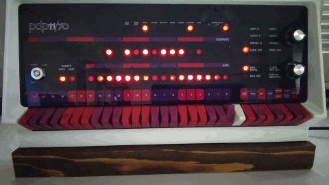

<head>
  <title>Revisiting RSX-11M v3.2</title>
 <style>  
 table {  
 background: #609900;  
 }  
   
 td {  
 background: #ffffdd
 }  
 </style>  
</head>
<body>

  <h1 id="Redux">RSX-11M v3.2 Redux</h1>
  <p>I am taking another trip down memory lane and revisiting a favorite computer
  with introspectable operating systems.</p>

    <table cellpadding=5><caption><bold>Contents of this page</bold></caption><td>
	<ul type="square">
          <li><a href="#OpCons">Operator's Console</a></li>
          <li><a href="#Revisit">Why revisit RSX-11M version 3.2?</a></li>
          <li><a href="#NewHW">New Hardware Configuration</a>
	    <ul type="circle">
              <li><a href="#ConfDevs">Configured Devices</a></li>
	    </ul>
	  </li>
          <li><a href="#Patching">Apply the latest Autopatch</a></li>
          <li><a href="#BigIndBld">Taskbuild BIGIND</a></li>
          <li><a href="#SysgenPhase1">SYSGEN phase I</a>
	    <ul type="circle">
              <li><a href="#Prepgen">Prepgen - select options</a></li>
              <li><a href="#sysSavedFix1">Correcting saved answers</a></li>
              <li><a href="#sysSavedFix2">Another correction was needed</a></li>
              <li><a href="#Assemble">Assemble executive and device drivers</a></li>
 	    </ul></li>
          <li><a href="#SysgenPhase2">SYSGEN Phase II - Build a bootable system</a>
	    <ul type="circle">
              <li><a href="#PrepPhase2">Prepare for phase II</a></li>
              <li><a href="#bldExec">Taskbuild executive and device drivers</a></li>
              <li><a href="#bldPriv">Taskbuild privileged tasks</a></li>
              <li><a href="#mkRSXsys">Create bootable system file</a></li>
              <li><a href="#vmrRSXsys">Load drivers, Install privileged tasks</a></li>
              <li><a href="#booRSXsys">Boot the newly generated system</a></li>
 	    </ul></li>
          <li><a href="#SysgenPhase3">SYSGEN Phase III - Build nonprivileged tasks</a></li>
          <li><a href="#Customize1">System Customization</a>
	    <ul type="circle">
              <li><a href="#CmdFiles">Startup and Shutdown commands</a></li>
              <li><a href="#FcsRes">Create Memory Resident FCS Library</a></li>
              <li><a href="#DEChelp">Enabling the HELP utility</a></li>
 	    </ul></li>
          <li><a href="#LayeredProds">Installing Layered Products</a>
	    <ul type="circle">
              <li><a href="#Edt2">DEC Standard Editor version 2</a></li>
              <li><a href="#Rms11">RMS-11 Record Management System</a></li>
              <li><a href="#Fort4">Fortran IV</a></li>
 	    </ul></li>
          <li><a href="#Conclude1">Conclusions</a></li>
	</ul>
    </td></table>

  <h2 id="OpCons">Operator's Console</h2>
  <p>Eight years ago I did an
  <a href="PDP11.html">RSX-11M SYSGEN and bemoaned the lack of an Operator's
  Console.</a>  What a pleasant surprise when I learned of the
  <a href="https://obsolescence.wixsite.com/obsolescence/pidp-11">PiDP-11 kit
  by Oscar Vermeulen!</a>  This is a kit for a PDP-11/70 Operator's Console.
  Thanks to the code by <a href="https://github.com/j-hoppe/BlinkenBone">
      Jörg Hoppe</a>, Operator's Consoles are now supported by simh.
  A <a href="https://www.raspberrypi.org/">Raspberry Pi</a> inside the console
  monitors the switches and controls the lights.  If you use a Raspberry Pi 3
  with a quad-core CPU, there is plenty of processing power to also run simh
  on the Pi -- the result is a PDP-11/70 totally contained within the
  console case.</p>
  <center></center>
  <p><a href="https://github.com/simh/simh">Simh</a> has been enhanced in
  recent years.  Additional types of devices are supported.  Logging and
  simh controls have improved.  For details, refer to the documentation in
  <a href="https://github.com/simh/simh/blob/master/doc/pdp11_doc.doc?raw=true">
      doc/pdp11_doc.doc</a> and
  <a href="https://github.com/simh/simh/blob/master/doc/simh_doc.doc?raw=true">
      doc/simh_doc.doc</a> in the simh github repository.</p>
  <p>To see a rotating lights display on the operator's console, RSX must be
  regenerated with support for that feature.  This a good time to add other
  devices to the configuration since that also requires a SYSGEN.
  I also see this as an opportunity to refine my prior SYSGEN.
  It will be beneficial to have some familarity with the
  <a href="PDP11.html">prior SYSGEN</a> because I will not repeat all those
  details here.</p>

  <h2 id="Revisit">Why revisit RSX-11M version 3.2?</h2>
  <p>There are newer versions of RSX-11M and RSX-11M-Plus with more
  features and support for additional devices.  Even the venerable VT100,
  introduced in August 1978, is not well supported by M3.2.  When I tried RMDemo
  in the past on RSX-11M V3.2 it did not properly display on a VT100.
  In an undocumented SYSGEN Phase III, VT100 was not one of the terminal
  types that could be chosen in the EDTBLD.CMD file used to customize EDT.</p>
  On the <a href="ftp://ftp.trailing-edge.com/pub/rsx11freewarev2">
      DECUS RSX SIG tapes</a>, there are a few documents with recommendations on
  performing a SYSGEN.  (See: rsx82a/333001/ and rsx83b/346103/)  I hope to use
  these to improve my technique.  Therefore I choose to revisit RSX-11M V3.2 for
  comparison to my prior SYSGEN and because for that release, all these are
  easily available: <ul>
  <li><a href="http://bitsavers.org/bits/DEC/pdp11/discimages/rl01/rsx11m_3.2/">
      RL01 Distribution Kit</a> from June 1979 with March 1980 Autopatch Revision B,</li>
  <li><a href="http://bitsavers.org/bits/DEC/pdp11/discimages/rk05/rsx11m_3.2/">
      RK05 Autopatch Kit</a> Revision E from May 1981 and</li>
  <li><a href="http://bitsavers.org/pdf/dec/pdp11/rsx11/RSX11M_V3.2_Jun79/">
      a full documentation set</a>.</li>
  </ul>

  <h2 id="NewHW">New Hardware Configuration</h2>
  <p>It is desirable to have devices for any software I might discover.  Thus
  I have added devices like DECtape, additional disk types and cassette tape.
  To provide a possibility for more storage, the controller for MSCP disks was
  added.</P>
  <p>It is not much of a problem if RSX-11M V3.2 does not support all the
  devices in the configuration.  Unsupported devices will be ignored by an
  OS.  However, those devices will be available when running some other OS.
  This works fine as long as there is a way for each OS to discover the
  addresses (CSR and interrupt vector) of all the supported devices.</p>
  <p>In RSX-11M V3.2 device addresses are manually configured by answering
  questions during SYSGEN Phase I.
  Newer software might be able to autoconfigure by detecting the devices
  present and thus reduce manual input needed to SYSGEN.</p>

  <h3 id="ConfDevs">Configured Devices</h3>
  <p>
  The table below shows the devices in the new configuration.  The simh
  commands to select this device configuration are in the file
  <a href=RSX11Mv3.2_sysgen/pdp_hw_config.ini>pdp_hw_config.ini</a>.  Another
  file called <bold>boot.ini</bold> is used to attach files to the various
  devices.  I used three different boot.ini files because disk volumes were
  moved around during the activity documented on this page.
  <ul>
      <li><a href=RSX11Mv3.2_sysgen/boot_for_autopatch.ini>boot_for_autopatch.ini</a>
	   arranged disks as needed to start applying patches,</li>
      <li><a href=RSX11Mv3.2_sysgen/boot_for_sysgen.ini>boot_for_sysgen.ini</a>
	   arranged disks as needed to start the SYSGEN,</li>
      <li><a href=RSX11Mv3.2_sysgen/boot.ini>boot.ini</a>
	   arranged disks as needed after SYSGEN Phase II was completed.</li>
  </ul> Sometimes disks had to be moved in the middle of a procedure.  Simh
  commands: Ctrl-E, attach and continue were used.  This can be seen in
  <a href=RSX11Mv3.2_sysgen/autopatch_simh.log>autopatch_simh.log</a>.</p>

  <table cellpadding=5><caption><em>Simulated PDP-11 Configuration</em></caption><td><pre>
RHA	RH70/RH11 Massbus adapter (for RP)
	address=17776700-17776753, vector=254, BR5
RHB	RH70/RH11 Massbus adapter (for TU)
	address=17772440-17772477, vector=224, BR5
CLK	60Hz, address=17777546-17777547, vector=100, BR6
PCLK	KW11-P programmable real time clock
	100K Hz, address=17772540-17772545, vector=104, BR6
PTR	PC11 paper tape reader
	address=17777550-17777553, vector=70, BR4
PTP	PC11 paper tape punch
	address=17777554-17777557, vector=74, BR4
TTI	address=17777560-17777563, vector=60, BR4   (console keyboard)
TTO	address=17777564-17777567, vector=64, BR4   (console printer)
TDC	TU58 cartridge
	controllers=1, address=17776500-17776507, vector=300*, BR4, 2 units
CR	CR11/CD11/CD20 card reader
	no EOF pending, address=17777160-17777167, vector=230, BR4
	1000 cards per minute, translation=029
LPT	LP11 line printer
	address=17777514-17777517, vector=200, BR4
DZ	DZ11 8-line terminal multiplexer
	address=17760100-17760117*, vector=310-324*, BR5, lines=16
RK	RK11/RKV11 cartridge disk controller
	address=17777400-17777417, vector=220, BR5, 8 units
RL	RL11/RL01(2) cartridge disk controller
	RL11, address=17774400-17774411, vector=160, BR5, 4 units
HK	RK611/RK06(7) cartridge disk controller
	address=17777440-17777477, vector=210, BR5, 8 units
RY	RX211 floppy disk controller
	address=17777170-17777173, vector=264, BR5, 2 units
RP	RP04/05/06/07 RM02/03/05/80 Massbus disk controller
	Massbus adapter 0 (RHA), 8 units
RQ	RQDX3 MSCP disk controller
	address=17772150-17772153, no vector, BR5, RQDX3, 4 units
TC	TC11/TU56 DECtape controller
	address=17777340-17777351, vector=214, BR6, 8 units
TQ	TUK50 TMSCP magnetic tape controller
	TK70 (300MB), address=17774500-17774503, no vector, BR5, 4 units
TU	TM03 tape formatter
	Massbus adapter 1 (RHB), FORMATTER, TM03, 8 units
TA	TA11/TA60 Cassette Tape
	address=17777500-17777503, vector=260, BR6, 2 units
XU	DEUNA/DELUA Ethernet controller
	address=17774510-17774517, vector=120, BR5, MAC=08:00:2B:88:4D:14
	type=DELUA, throttle=disabled</pre>
  </td></table>
  <p>Even though devices have been added, most devices that were in the prior
  configuration have unchanged CSR/vector addresses.  Therefore I can use the
  RSX system that was previously generated as a starting point on this hardware
  configuration.  (Except the DZ11 terminal multiplexer has a new vector.  Only
  the console terminal was usable until SYSGEN Phase II was complete.)</p>

  <hr />

  <h2 id="Patching">Apply the latest Autopatch</h2>
  <p>
  The most recent autopatch kit consists of two RK05 disks.  The RSX-11M
  distribution kit is on five RL01 disks.  This procedure updates the RSX-11M
  distribution kit with the most recent fixes.  Autopatch modifies the
  distribution kit.  Before running the autopatch procedure, make a backup copy
  of your original RSX-11M distribution kit.</p>
  <p>
  The first autopatch RK05 disk updates the RSX-11M distribution kit.  That
  first disk also contains the instruction for applying autopatch in this file
  [200,200]AUTOPATCH.DOC.  The second autopatch RK05 can be used to patch
  layered products.</p>
  <p>
  Four of the RL01 distribution disks, baseline, unmapped sources,
  mapped sources, and utilities get updated by the first autopatch disk.
  The RMS11 disk is not needed during SYSGEN.  But it can be patched later as a
  layered product.</p>
  <p>
  It is possible to apply autopatch with only two mass storage units.  However
  by using more drives, one can reduce the number of times a disk pack be moved.
  By using the two RP06 disks, the system is available for timesharing with
  other users while the patches get applied.</p>
  <p>
  The copies of the RSX-11M distribution kit disks to be updated will be
  inserted into either DL1: or DL2:.  Here are all the disks which were mounted
  during the autopatch procedure:<ul>
  <li>DB0: (RP06) A previously generated RSX-11M V3.2 system (with no patches).
      The PDP-11/70 was booted from this disk.</li>
  <li>DB1: (RP06) A disk containing user directories.</li>
  <li>DK0: (RK05)[write protected] Autopatch disk 1</li>
  <li>DK1: (RK05)[write protected] Autopatch disk 2 (only examined, not used
  by AUTOPATCH.CMD)</li>
  <li>DL0: (RL02) Scratch disk used to temporarily store files.</li>
  <li>DL1: (RL01) "Baseline" RSX-11M distribution disk.</li>
  <li>DL2: (RL01) sources and utilities RSX-11M distribution disks.</li>
  </ul>
  <p>
  Here is an abridged transcript of running autopatch.  Long sequences of
  commands with no interaction are not shown.  The full transcript is in
  <a href="RSX11Mv3.2_sysgen/autopatch_console.log">autopatch_console.log</a>.
  From the timestamps we can see that applying patches took only a few minutes,
  much less time than
  predicted by AUTOPATCH.DOC.  (This was run via simh on a Raspberry Pi 3).
  <em>When applying patches be careful and review the entire printout from
      this procedure to verify that no error has occurred.</em></p>

    <table cellpadding=5><caption><em>Abridged autopatch transcript</em></caption><td><pre>
Connected to the PDP-11 simulator CON-TELNET device

  RSX-11M V3.2 BL26   1920K  MAPPED
>RED DB:=SY:
>RED DB:=LB:
>MOU DB:SYSGENBL26
>@DB:[1,2]STARTUP
>* PLEASE ENTER TIME AND DATE (HR:MN DD-MMM-YY) [S]: 28-mar-19 10:20
>TIM 28-mar-19 10:20
>* ENTER LINE WIDTH OF THIS TERMINAL [D D:132.]: 
>SET /BUF=TI:132.
>set /pub=db1:
>mou db1:USERDIRS
>ACS SY:/BLKS=512.
>;
>; NOTE - The Baseline INDirect must be replaced by BIGIND with 
>;      a priority of 10. for SYSGEN.
>;
>;  ie  >REM ...AT.
>;      >INS $BIGIND/PRI=10.
>;
>@ &lt;EOF>
>
>;;; Examine the autopatch kit
>all dk:
>mou dk:autopatchE1
>pip dk:[200,200]/li


DIRECTORY DK0:[200,200]
28-MAR-19 10:20

AUTOPATCH.DOC;1     168.       15-MAY-81 13:56
AUTOPATCH.CMD;1     69.        15-MAY-81 13:56

TOTAL OF 237./237. BLOCKS IN 2. FILES


>;;; Read the autopatch documentation
>pip lp:=dk:[200,200]autopatch.doc
>
>;;; Get information about layered product updates of interest
>all dk1:
>mou dk1:autopatchE2
>pip lp:=dk1:[*,*]/li
>pip lp:=dk1:[245,200]ed2.doc
>pip lp:=dk1:[250,200]fort4.doc
>pip lp:=dk1:[275,200]rms.doc
>
>;;; Setup for running autopatch
>
>;;; Initialize the scratch disk
>all dl:
>ini dl:scratch
>dea dl:
>
>all dl1:
>mou dl1:rsxm26
>pip lp:=dl1:[*,*]/li
>
>;;; Distribution kit on bitsavers.org is not pristine -- delete detritus
>pip dl1:[200,200]syssaved.cmd;*/de
>
>;;; Setup is complete.  Run the autopatch procedure.
>tim
10:22:47 28-MAR-19
>asn dl1:=sy:
>set /uic=[200,200]
>pip sy:=dk:autopatch.cmd
>dmo dk:
DMO -- TT0:   DISMOUNTED FROM DK0:    *** FINAL DISMOUNT ***

>@[200,200]autopatch
>;
>;
>; AUTOPATCH Rev. E patches only the software for RSX-11M.
>; If you wish to patch any layered product software, 
>; please refer to your cover letter.
>;
>;
>;
>;
>; RSX-11M V3.2 BL26 Autopatch Revision E Version 1.80
>; 
>; COPYRIGHT (C) 1981 DIGITAL EQUIPMENT CORPORATION, MAYNARD, MASS.
>;
>;
>;
>SET /UIC=[1,1]
>;
>* 1.  Have you made a copy of the disk(s) to be patched? [Y/N]:y
>;
>; Specify the type of RSX-11M V3.2 distribution kit you have by
>; responding to the next question with either A, B, or C where:
>;
>;      A -- indicates the big disk distribution kit
>;              (RK06/RK07, RM02/RM03, RP02/RP03, RP04/RP05/RP06)
>;      B -- indicates the RL01/RL02 distribution kit
>;      C -- indicates the dual RK05 distribution kit
>;
>* 2.  What type of distribution kit do you have (A, B, or C) [S]: B
>* 3.  Do you have a second RL01/RL02 drive to use? [Y/N]:y
>* 4.  Are you running Autopatch standalone (on the baseline system)? [Y/N]:
>* 5.  Are you going to SYSGEN a mapped system? [Y/N]:y
>* 6.  Do you want to patch UNMSRC (unmapped sources)? [Y/N]:y
>;
>; If you answer Y to the next question, the contents of UIC
>; [1,50] will be deleted to provide space for the
>; Autopatch files.  If you answer N, Autopatch will exit.
>;
>* 7.  Should the contents of UIC [1,50] be deleted? [Y/N]:y
>SET /UIC=[1,54]
>;
>; To provide more space on the baseline disk for Autopatch files, several
>; files which are not needed by Autopatch will be copied to a scratch
>; disk. These files include [1,54]EDT.TSK,EDI.TSK,ZAP.TSK,VFY.TSK,
>; [1,54]PAT.TSK,DMP.TSK,CMP.TSK,BAD.TSK, and [1,51]BADSYS.SYS,BADSYS.STB
>; These files will all be restored at the end of the Autopatch
>; procedure. Other files in [1,51]*.* will also be deleted and replaced from
>; the Autopatch kit.
>;
>; Please insert a scratch RL01/RL02 into a free RL01/RL02 drive.
>; You will be asked to give the internal label of your scratch RL01/RL02
>;
>* 8.  Enter the label of your scratch RL01/RL02 [S R:1.-9.]: scratch
>* 9.  Enter the unit number of the drive containing a scratch RL01/RL02 [O]: 0
>MOU DL0:scratch
>* 10.  Did DL0: mount successfully? [Y/N]:y
>;
>UFD DL0:[1,51]
>UFD DL0:[1,54]
>PIP DL0:[1,51]/NV=SY:[1,51]BADSYS.*
>PIP DL0:[1,54]/NV=SY:[1,54]EDT.TSK,EDI.TSK,ZAP.TSK,VFY.TSK,PAT.TSK
>PIP DL0:[1,54]/NV=SY:[1,54]DMP.TSK,CMP.TSK,BAD.TSK
>;
>; Now delete copied files from the baseline disk
>;
>PIP SY:[1,51]*.*;*/DE/NM
>PIP SY:[1,54]EDT.TSK;*,EDI.TSK;*,ZAP.TSK;*,VFY.TSK;*,PAT.TSK;*/DE/NM
>PIP SY:[1,54]DMP.TSK;*,CMP.TSK;*,BAD.TSK;*/DE/NM
>DMO DL0:
DMO -- TT0:   DISMOUNTED FROM DL0:    *** FINAL DISMOUNT ***

>;
>; Now remove the scratch disk from DL0:
>;
>SET /UIC=[1,1]
>;
>; Determine the Autopatch kit device and unit.  Place the Autopatch
>; medium labeled AUTOPATCHE1 on that unit.  The unit should be write
>; protected.  When the unit is ready respond to the next question.
>;
>* 11.  When ready, enter the Autopatch device and unit (ddu:) [S]: DK0:
>MOU DK0:AUTOPATCHE1
>* 12.  Did the AUTOPATCHE1 disk mount successfully? [Y/N]:y
>;
>; Autopatch copies the Autopatch files to temporary UFDs
>; in order to perform the Autopatch process.  The .MAC
>; .OBJ, .OLB, .SYS, and .STB Autopatch files are
>; automatically deleted from these UFDs at the end
>; of the Autopatch process.
>;
>* 14.  Should .PAT, .COR, .CMD and .ODL Autopatch files be deleted? [Y/N]:y
>;
>; Determine the second RL01/RL02 unit to use.
>;
>* 15.  What will be your second RL01/RL02 device and unit (ddu:) [S]: DL2:
>;
>;
>; Begin Autopatch process for RSX-11M V3.2 BL26 operating system
>; on 28-MAR-19 at 10:24:48.
>;
>; RL01/RL02 distribution kit
>;
>;
>; Delete [1,50] system files.
>;
>PIP [1,50]*.*;*/DE/NM
>;
>; Copy the files from the Autopatch kit to the distribution kit.
>;
>PIP SY:[*,*]/NV/UF/FO/NM=DK0:[*,60]*.*,[*,64]*.*
>;
>DMO DK0:
DMO -- TT0:   DISMOUNTED FROM DK0:    *** FINAL DISMOUNT ***

<strong><em>;;; A sequence of commands with no interaction was deleted here.</em></strong>

>;
>; Now place the RLUTIL in DL2:.  The drive should be write
>; enabled.
>;
>* 16.  Is the RLUTIL disk ready in DL2:? [Y/N]:y
>MOU DL2:RLUTIL
>* 17.  Did the RLUTIL mount successfully? [Y/N]:y

<strong><em>;;; A sequence of commands with no interaction was deleted here.</em></strong>

>DMO DL2:RLUTIL
DMO -- TT0:   DISMOUNTED FROM DL2:    *** FINAL DISMOUNT ***

>;
>; Remove the RLUTIL disk from DL2: and replace it with the
>; UNMSRC disk.  The drive should be write enabled.
>;
>* 18.  Is the UNMSRC disk ready in DL2:? [Y/N]:y
>MOU DL2:UNMSRC
>* 19.  Did the UNMSRC mount successfully? [Y/N]:y

<strong><em>;;; A sequence of commands with no interaction was deleted here.</em></strong>

>DMO DL2:UNMSRC
DMO -- TT0:   DISMOUNTED FROM DL2:    *** FINAL DISMOUNT ***

>;
>; Remove the UNMSRC disk from DL2: and replace it with the
>; MAPSRC disk.  The drive should be write enabled.
>;
>* 20.  Is the MAPSRC disk ready in DL2:? [Y/N]:y
>MOU DL2:MAPSRC
>* 21.  Did the MAPSRC mount successfully? [Y/N]:y

<strong><em>;;; A sequence of commands with no interaction was deleted here.</em></strong>

>DMO DL2:MAPSRC
DMO -- TT0:   DISMOUNTED FROM DL2:    *** FINAL DISMOUNT ***

>ASN =IN:
>ASN =OU:
>;
>;
>;
>; Delete the Autopatch files.
>;

<strong><em>;;; A sequence of commands with no interaction was deleted here.</em></strong>

>;
>;
>; Please put the scratch disk labelled, scratch, into DL0: so that
>; the files which were temporarily saved there may be restored.
>;
>* 22.  Is the scratch RL01/RL02, scratch, ready in DL0:? [Y/N]:y
>MOU DL0:scratch
>* 23.  Did DL0: mount successfully? [Y/N]:y
>SET /UIC=[1,54]
>PIP [1,54]=DL0:[1,54]EDT.TSK,EDI.TSK,ZAP.TSK,VFY.TSK,PAT.TSK
>PIP [1,54]=DL0:[1,54]DMP.TSK,CMP.TSK,BAD.TSK
>PIP [1,51]=DL0:[1,51]BADSYS.*
>DMO DL0:
DMO -- TT0:   DISMOUNTED FROM DL0:    *** FINAL DISMOUNT ***

>REM SLP
>REM LBR
>;
>; Finished with Autopatch process for RSX-11M V3.2 BL26 operating
>; system software on 28-MAR-19 at 10:29:33.
>;
>;
>;
>;
>;
>; Upon completion of Autopatch, [200,200]AUTOPATCH.*;*
>; should be deleted from the baseline disk (RSXM26).
>; This will provide additional space for completing the
>; SYSGEN.
>;
>;
>; Autopatch exiting.
>;
>@ &lt;EOF>
>
>dea dk:
>dmo dk1:
DMO -- TT0:   DISMOUNTED FROM DK1:    *** FINAL DISMOUNT ***

>dea dk1:
>asn =sy:
>dmo dl1:
DMO -- TT0:   DISMOUNTED FROM DL1:    *** FINAL DISMOUNT ***

>run $shutup

RSX11M SHUT DOWN PROGRAM

ENTER MINUTES TO WAIT BEFORE SHUTDOWN: 0
OK TO SHUTDOWN? [Y/N]: y
ALL FURTHER LOGINS ARE DISABLED

<strong><em>;;; A sequence with no interaction was deleted here.</em></strong>

Disconnected from the PDP-11 simulator</pre>
  </td></table>
  <p><strong>NOTE:</strong> Now that you have patched your distribution kit,
  make a backup copy of all the updated disks.  On a real PDP-11, you can use
  DSC to make backups to either disk or magtape.  If you are using simh, you can
  simply make a copy of the virtual disk files.</p>
  <hr />

  <h2 id="BigIndBld">Taskbuild BIGIND</h2>
  <p>Like any privileged task, INDirect must be rebuilt to match the executive.
  This was not done during the previous SYSGEN.  This must be done before an
  online SYSGEN is possible.  All needed files were copied from the distribution
  disks when the previously generated system was transferred to RP06.
  </p>

  <table cellpadding=5><caption><em>Build BIGIND transcript</em></caption><td><pre>

<strong><em>;;; Commands that execute at RSX boot were deleted here.</em></strong>

>;
>; NOTE - The Baseline INDirect must be replaced by BIGIND with 
>;      a priority of 10. for SYSGEN.
>;
>;  ie  >REM ...AT.
>;      >INS $BIGIND/PRI=10.
>;
>@ &lt;EOF>
>
>asn lb:=tk:
>asn lb:=mp:
>set /uic=[1,24]
>run $bigtkb
INS -- PARTITION PAR14K NOT IN SYSTEM, DEFAULTING TO GEN
TKB>@bigindbld
TKB>^Z
>asn =tk:
>asn =mp:  </pre>
  </td></table>
 
  <hr />
  <h2 id="SysgenPhase1">SYSGEN phase I - select options, assemble executive and device drivers</h2>
  <p>
  This same procedure was demonstrated in the prior SYSGEN Phase I from 2010.
  That procedure is repeated here with a few variations.  The focus of this
  discussion is about variations as perhaps a better example of SYSGEN. The full
  transcript is available in
  <a href="RSX11Mv3.2_sysgen/prepgen_console.log">prepgen_console.log</a>.</p>
  <h3 id="Prepgen">Prepgen - generate a saved answers file</h3>
  <ul>
    <li>Prepgen is selected by answering YES to both
	question 1 "Inhibit MCR command lines" and question 10 "Save responses".
	Thus all the questions get asked and a saved answer file is created,
	then SYSGEN.CMD exits without assembling the executive or drivers.</li>
    <li>The executive option for rotating lights on the operators console
	was selected.</li>
    <li>Answers to peripherals configuration have changed to utilize the
	additional devices.  Unfortunately, two device configurations were not
	what I wanted.  An RK06 type device was desired for DM3: but an RK07
	was selected.</li>
    <li>After answering the question about DZ11 configuration, I decided that
	modem support was not required.</li>
    <li>SYSGEN.CMD did not allow repeating the peripherals section to correct
	those answers.</li>
    <li>Because the assembler was not run, I had the opportunity
	to create the needed db:[11,34] directory before it was needed.</li>
  </ul></p>

  <table cellpadding=5><caption><em>Abridged Prepgen transcript</em></caption><td><pre>
>all dl1:
>mou dl1:rsxm26
>asn dl1:=sy:
>rem ...at.
>ins $bigind/pri=10.
INS -- WARNING - PRIVILEGED TASK OVERMAPS I/O PAGE
>set /uic=[200,200]
>@sysgen
>;
>; RSX-11M Ver. 3.2 BL26 System Generation 3.2.3a done on 28-MAR-19 at 16:10:19
>;
>; Copyright (C) 1979 Digital Equipment Corporation, Maynard Mass.
>;
>; RL01 distribution kit
>;
>*  1. Inhibit MCR command lines (Type &lt;ESC> for explanation)? [Y/N]:y
>*  3. Use saved or canned answer file for input responses? [Y/N]:
>* 10. Save responses (i.e.: create SYSSAVED.DAT)? [Y/N]:y
>* 11. UIC for SYSSAVED files if not [200,200]  [S]: 
>* 12. UIC for SYSGEN command files if not [200,200] [S]: 
>* 14. Device, when ready, for Executive sources (ddu:)  [S]: dl2:
>;

<strong><em>;;; A sequence of interaction was deleted here.</em></strong>

>* 30. Rotating pattern in data lights? [Y/N]:y

<strong><em>;;; A sequence of interaction was deleted here.</em></strong>

>;
>; Enter [L/R,] vector, CSR, number of drives for:
>;
>*  3. DD controller 0 [D: 300,176500]              [S]: ,,2
>;

<strong><em>;;; A sequence of interaction was deleted here.</em></strong>

>; Enter [L/R,] vector, CSR, # drives, O=offset recovery/NO=no offset rec. for:
>;
>* 13. DM controller 0 [D: 210,177440,,O]           [S]: ,,8,NO
>* 54. Contr 0 unit 0. is an RK06/RK07 [D: RK06]    [S]: 
>* 54. Contr 0 unit 1. is an RK06/RK07 [D: RK06]    [S]: 
>* 54. Contr 0 unit 2. is an RK06/RK07 [D: RK06]    [S]: 
>* 54. Contr 0 unit 3. is an RK06/RK07 [D: RK06]    [S]: RK07
>* 54. Contr 0 unit 4. is an RK06/RK07 [D: RK06]    [S]: RK07
>* 54. Contr 0 unit 5. is an RK06/RK07 [D: RK06]    [S]: RK07
>* 54. Contr 0 unit 6. is an RK06/RK07 [D: RK06]    [S]: RK07
>* 54. Contr 0 unit 7. is an RK06/RK07 [D: RK06]    [S]: RK07
>;

<strong><em>;;; A sequence of interaction was deleted here.</em></strong>

>; Enter vector, CSR, highest line number <0 to 7> [, answer speed] for:
>;
>* 24. DZ controller 0 [D: ,,,0]                    [S]: 300,160100,7,9600
>* 24. DZ controller 1                              [S]: 310,160110,7,9600
>;     SGN -- Illegal trailing characters or extra parameters "9600" -- RETRY
>* 24. DZ controller 1                              [S]: 310,160110,7
>;
>* EOS * Do you want to: <CR>-continue R-repeat section E-exit P-pause [S]: r
>;     SGN -- Repetition on the peripherals section is not possible at this tim
>;
>* Do you wish to continue with this SYSGEN? [Y/N]:y
>;
>; End of interrupt vector area has been set to 400
>;
>;
>; Create Executive build files
>;
>;
>; Assemble the Executive
>;
>;
>*  1. Do you wish to edit any of the Executive files? [Y/N]:n
>;
>*  2. Is DB: initialized, mounted with UFD [11,34], and ready? [Y/N]:y
>;
>* EOS * Do you want to: <CR>-continue R-repeat section E-exit P-pause [S]: 
>;
>;
>; Prepare for task building
>;
>;
>* EOS * Do you want to: <CR>-continue R-repeat section P-pause [S]: 
>;
>;
>; End of SYSGEN phase I at 19:12:43 on 28-MAR-19
>;     -- To continue type: @[200,200]SYSGEN2
>;
>@ &lt;EOF>
>
>ufd db:[11,34]
></pre></td></table>

  <h3 id="sysSavedFix1">Correcting saved answers</h3>
  <p>
  The saved answer file is written out as SYSGEN questions are asked.  Since
  the wrong answers were near the end of the SYSGEN Phase I dialog, corrected
  lines are near the end of the SYSSAVED.DAT file.  Errors are flagged in this
  copy of <a href="RSX11Mv3.2_sysgen/syssaved.dat_with_mistakes_highlighted">
      SYSSAVED.DAT</a>.  Answers were corrected in
  two passes with the EDI line editor.  The saved answer file is renamed
  as SYSSAVED.CMD to be usable by SYSGEN and older copies are deleted.</p>

  <table cellpadding=5><caption><em>Correcting saved answers</em></caption><td><pre>
>;;; Fix saved Sysgen Phase I answers
>asn dl1:=sy:
>set /uic=[200,200]
>edi syssaved.dat
[00036 LINES READ IN]
[PAGE    0]
*
.ENABLE GLOBAL
*pl $2DM0
[00036 LINES READ IN]
[00036 LINES READ IN]
[00028 LINES READ IN]
.SETS $2DM0 ""
*
.SETS $3DM0 "RK07"
*ch /RK07//
.SETS $3DM0 ""
*ex
[EXIT]

>edi syssaved.dat
[00036 LINES READ IN]
[PAGE    0]
*pl $$DZ
[00036 LINES READ IN]
[00036 LINES READ IN]
[00028 LINES READ IN]
.SETS $$DZ0 "300,160100,7,9600"
*ch /,9600/
.SETS $$DZ0 "300,160100,7"
*ed
[EXIT]

>
>;;; Make saved answers usable as input to SYSGEN
>pip syssaved.cmd=syssaved.dat
>pip SYSSAVED.DAT;*/de
></pre></td></table>

  <h3 id="sysSavedFix2">Another correction was needed</h3>
  <p>
  There was one more problem.  It was only discovered near the end of SYSGEN
  Phase II when this error was displayed.</p>
  <table cellpadding=5><caption><em>VMR detected vector conflict</em></caption><td>
	  <pre>
>pip rsx11m.sys/co/bl:498.=rsx11m.tsk
>asn sy:=lb:
>ins db0:vmr
>vmr @sysvmr
VMR -- INTERRUPT VECTOR ALREADY IN USE
LOA DD:
</pre></td></table>
  <p>
  Both the DECtape-II (DD:) and the first DZ11 (TT1:) were given the vector at
  300.  Both devices use floating vectors.  From the simh device configuration
  printout, one can see the tape has priority; it uses 300.  The DZ11's use
  vectors at 310 and 320.  I made a mistake by not verifying vector and CSR
  when originally answering the question about the DZ11's.</p>
  <table cellpadding=5><caption><em>Fix the DZ11 vectors</em></caption><td>
	  <pre>
>edi SYSSAVED.CMD
[00036 LINES READ IN]
[PAGE    0]
*pl $$DZ
[00036 LINES READ IN]
[00036 LINES READ IN]
[00028 LINES READ IN]
.SETS $$DZ0 "300,160100,7"
*ch /300/310/
.SETS $$DZ0 "310,160100,7"
*
.SETS $$DZ1 "310,160110,7"
*ch /310/320/
.SETS $$DZ1 "320,160110,7"
*ed
[EXIT]

></pre></td></table>

  <h3 id="Assemble">Assemble executive and device drivers</h3>
  <p>
  There are only a few questions to answer.  And there is no need to create
  another saved answers file.  Since the PiDP is much faster than a PDP-11/70,
  running SYSGEN Phase I with saved answers only takes a few minutes.
  The full log is in <a href="RSX11Mv3.2_sysgen/rerun_ph_I_II_console.log">
  rerun_ph_I_II_console.log</a>.</p>
  <table cellpadding=5><caption><em>Assemble executive and drivers</em></caption><td>
	  <pre>
>rem ...at.
>ins $bigind/pri=10.
INS -- WARNING - PRIVILEGED TASK OVERMAPS I/O PAGE
>asn dl1:=sy:
>set /uic=[200,200]
>@sysgen
>;
>; RSX-11M Ver. 3.2 BL26 System Generation 3.2.3a done on 30-MAR-19 at 14:50:26
>;
>; Copyright (C) 1979 Digital Equipment Corporation, Maynard Mass.
>;
>; RL01 distribution kit
>;
>*  1. Inhibit MCR command lines (Type &lt;ESC> for explanation)? [Y/N]:
>*  2. Have you made a copy of the distribution kit? [Y/N]:y
>*  3. Use saved or canned answer file for input responses? [Y/N]:y
>*  4. Undefined answer wakeup? [Y/N]:y
>*  5. Use saved host configuration? [Y/N]:y
>*  6. Use saved peripheral configuration? [Y/N]:y
>*  7. Skip end of section (EOS) breakpoints? [Y/N]:y
>*  8. Skip end of execution (EOX) breakpoints? [Y/N]:y
>* 10. Save responses (i.e.: create SYSSAVED.DAT)? [Y/N]:
>* 11. UIC for SYSSAVED files if not [200,200]  [S]: 
>* 12. UIC for SYSGEN command files if not [200,200] [S]: 
>* 13. Clean up files from previous GENs? [Y/N]:y
>;
>; Saved-answer file created 28-MAR-19 AT 16:11:29 by SYSGEN version 3.2.3a 
>;
>* 14. Device, when ready, for Executive sources (ddu:)  [S]: dl2
>;
>MOU DL2:MAPSRC
>ASN DL2:=LB:
>;
>SET /UIC=[1,1]
>PIP [1,20]RSXBLD.CMD;*/DE/NM,SYSPAR;*
>PIP [1,24]RSXBLD.CMD;*/DE/NM,TTDRVBLD;*,SYSPAR;*
>PIP [1,50]SYSVMR.CMD;*/DE/NM,[1,54]SYSVMR;*
>PIP [11,20]*.OBJ;*/DE/NM,*.UDC;*,*.ICR;*,*.IDS;*,*.PCS;*
>PIP [11,20]RSXASM.CMD;*/DE/NM,RSXDRVASM;*,RSXBLD;*
>PIP [11,24]*.OBJ;*/DE/NM,*.UDC;*,*.ICR;*,*.IDS;*,*.TTY;*,*.PCS;*
>PIP [11,24]RSXASM.CMD;*/DE/NM,RSXDRVASM;*,RSXBLD;*
>PIP [11,10]SYSTB.MAC;*/DE/NM,ICTAB;*,RSXMC;*,[200,200]SGNPARM.CMD;*
>PIP [11,10]RSXASM.CMD;*/DE/NM,RSXDRVASM;*,RSXBLD;*
>PIP /FR

DL1: HAS 5052. BLOCKS FREE, 5188. BLOCKS USED OUT OF 10240.
LARGEST CONTIGUOUS SPACE = 3493. BLOCKS

>SET /UIC=[11,10]
>;
>; Target configuration
>;
>; Processor:11/70   Memory Size:128K,Mapped   System:RSX-11M
>;
>; Host configuration
>;
>; Executive Options
>;
>; Terminal driver options
>;
>;     Thinking ...
>;
>; End of Executive option generation at 14:51:22 on 30-MAR-19
>;
>; Peripheral configuration
>;
>;     Parameters  appearing  in  square  brackets  "[...]"  can  only be
>;     specified  for  the  first  controller  of  a  particular  device.
>;     Parameters appearing in parentheses "(...)" only need be specified
>;     if   the  indicated  option  is  present  on  the  target  system.
>;    
>;     The   default  for  loadable  drivers  has  been  set  to  *TRUE*.
>;     To override this setting enter R (resident) as the first parameter
>;     for    the    first    controller   of   the   specified   device.
>;    
>; A/D and Laboratory devices: None specified
>;
>; Interprocessor communication devices: None specified
>;
>; Unit record devices: CR, LP, PR, PP
>;
>; Disks: DB, DD, DK, DL, DM, DT, DY
>;
>; Tapes: CT, MM
>;
>; Non-physical (pseudo) devices: CO, TT, NL, TI, CL, LB, SY
>;
>SET /UIC=[1,24] ! Creating TTDRVBLD.CMD
>SET /UIC=[11,10]
>; End of interrupt vector area has been set to 400
>;
>;
>; Create Executive build files
>;
>PIP RSXMC.MAC=LB:RSXMC0.MAC/AP
>;
>; Assemble the Executive
>;
>PIP [11,24]/NV=RSXASM.CMD,RSXDRVASM.CMD
>PIP RSXASM.CMD;0/DE,RSXDRVASM;0
>INS SY:$BIGMAC
INS -- PARTITION PAR14K NOT IN SYSTEM, DEFAULTING TO GEN
>;SET /COFFEEBREAK=TI: Start of Executive assembly at 14:51:44 on 30-MAR-19
>SET /UIC=[11,24]
>MAC @RSXASM
>;SET /NOCOFFEEBREAK=TI: Executive assembly ended at 14:53:32 on 30-MAR-19
>;SET /COFFEEBREAK=TI: Start of device drivers assembly at 14:53:32 on 30-MAR-19
>SET /UIC=[11,24]
>MAC @RSXDRVASM
>;SET /NOCOFFEEBREAK=TI: Device drivers assembly ended at 14:55:06 on 30-MAR-19
>REM MAC
>;
>; Prepare for task building
>;
>PIP RSX.OBS=*.OBJ
>PIP *.OBJ;*/DE/NM
>PIP RSX11M.OBJ/RE=RSX.OBS
>PIP TTDRV.OBJ=*.TTY
>PIP *.TTY;*/DE/NM
>SET /UIC=[1,24]
>PIP /NV=[11,10]RSXBLD.CMD
>;
>;
>; End of SYSGEN phase I at 14:55:11 on 30-MAR-19
>;     -- To continue type: @[200,200]SYSGEN2
>;
>SET /UIC=[200,200]
>@ &lt;EOF>
</pre></td></table>

  <hr />
  <h2 id="SysgenPhase2">SYSGEN Phase II - Build a bootable system on the target disk</h2>
  <p>
  All of SYSGEN Phase II console interaction is recorded in
   <a href="RSX11Mv3.2_sysgen/rerun_ph_I_II_console.log">
       rerun_ph_I_II_console.log</a>.<p>

  <h3 id="PrepPhase2">Prepare for phase II</h3>
  <p>
  Create a directory for maps.  Then save some of the driver sources.  To
  provide enough space on the MAPSRC RL01 disk, the RSX-11M System Generation
  and Management Guide suggests removing infrequently used driver sources.</p>
  <table cellpadding=5><caption><em>Preparing for phase II</em></caption><td><pre>
>;;; create dirs for maps and exec sources
>ufd db:[1,34]
>ufd db:[11,10]
>
>;;; remove some driver sources to make room on MAPSRC disk
>pip
PIP>db:[11,10]/nv/fo/cd=dl2:[11,10]ADDRV.MAC;,AFDRV.MAC;,ARDRV.MAC;
PIP>db:[11,10]/nv/fo/cd=dl2:[11,10]ICDRV.MAC;,IPDRV.MAC;,ISDRV.MAC;
PIP>db:[11,10]/nv/fo/cd=dl2:[11,10]LADRV.MAC;,LSDRV.MAC;,UDDRV.MAC;
PIP>db:[11,10]/nv/fo/cd=dl2:[11,10]XBDRV.MAC;,XLDRV.MAC;,XMDRV.MAC;
PIP>db:[11,10]/nv/fo/cd=dl2:[11,10]XPDRV.MAC;,XQDRV.MAC;,XUDRV.MAC;
PIP>db:[11,10]/nv/fo/cd=dl2:[11,10]XWDRV.MAC;
PIP>dl2:[11,10]ADDRV.MAC;*/de,AFDRV.MAC;*,ARDRV.MAC;*
PIP>dl2:[11,10]ICDRV.MAC;*/de,IPDRV.MAC;*,ISDRV.MAC;*
PIP>dl2:[11,10]LADRV.MAC;*/de,LSDRV.MAC;*,UDDRV.MAC;*
PIP>dl2:[11,10]XBDRV.MAC;*/de,XLDRV.MAC;*,XMDRV.MAC;*
PIP>dl2:[11,10]XPDRV.MAC;*/de,XQDRV.MAC;*,XUDRV.MAC;*,XWDRV.MAC;*
PIP>^Z
></pre></td></table>

  <h3 id="bldExec">Taskbuild executive and device drivers</h3>
  <p>
  SYSGEN2.CMD does most of the work.  But an error occurs when creating the
  object library for the executive modules.  Autopatch and/or the additional
  device drivers in the new configuration require more space in that library.
  Manually rebuilding the library with slightly larger space allocations allows
  SYSGEN to proceed.</p>
  <table cellpadding=5><caption><em>Running SYSGEN2.CMD</em></caption><td><pre>
>set /uic=[200,200]
>@sysgen2
>;
>; RSX-11M Version  3.2 System Generation Phase II started 30-MAR-19 at 16:55:33
>;
>; Copyright (C) 1979 Digital Equipment Corporation, Maynard Mass.
>;
>*  1. In what UIC is SGNPARM.CMD if not [200,200] [S]: 
>;
>; RL01 distribution kit SYSGEN versions 3.2.3a / 2:3.2.2d  for RSX11M BL26
>;
>; Continuation from SYSGEN phase I done on 30-MAR-19 at 14:55:10
>;
>;     The map device ( DB: ) must already be mounted with UIC [1,34].
>;     If  it  is  not,  ^Z  SYSGEN2  at  the  next  question and do so.
>;
>*  2. Expanded comments desired for SYSGEN phase II? [Y/N]:
>*  3. Is SYSGEN still running on-line? [Y/N]:y
>*  5. If not in DL2: enter object files device when ready (ddu:) [S]: 
>;
>MOU DL2:MAPSRC
>ASN DL2:=LB:
>ASN SY:=TK:
>PIP /FR

DL1: HAS 4684. BLOCKS FREE, 5556. BLOCKS USED OUT OF 10240.
LARGEST CONTIGUOUS SPACE = 3493. BLOCKS

>*  6. Have you already built the libraries, the Exec, and the loadable drivers? [Y/N]:
>;
>; Start of Executive and driver build phase at 16:56:10 on 30-MAR-19
>;
>;
>; Create system libraries at 16:56:10 on 30-MAR-19
>;
>INS $LBR
>SET /UIC=[1,1]
>PIP ANSLIB.OLB/NV=SYSLIB.OLB
>LBR ANSLIB/RP=LB:FCSMTA
MODULE "ANSPAD" REPLACED

<strong><em>;;; A sequence of "REPLACED" messages was deleted here.</em></strong>

MODULE "WTWAIT" REPLACED

>SET /UIC=[1,24]
>PIP RSX11M.OLB;*/DE/NM,TTDRV;*
>LBR RSX11M/CR:80.:640.:256.=[11,24]RSX11M.OBJ
LBR -- *FATAL*-EPT OR MNT EXCEEDED IN RSX11M.OBJ;1

>LBR TTDRV/CR:52.:256.:64.=[11,24]TTDRV.OBJ
>PIP LB:/NV=LB:MCR.OLB
>LBR LB:MCR/RP=LB:MCRTTFD
MODULE "SETOV " REPLACED

MODULE "SPROV " REPLACED

MODULE "SDSOV " REPLACED

>INS SY:$BIGTKB
INS -- PARTITION PAR14K NOT IN SYSTEM, DEFAULTING TO GEN
>;
>; Taskbuild the Executive and the terminal driver at 16:56:21 on 30-MAR-19
>;
>PIP [1,34]*.*;*/DE/NM
>TKB @RSXBLD
TKB -- *FATAL*-LIBRARY FILE RSX11M.OLB;1 HAS INCORRECT FORMAT


>;
>* EOX * Did the Executive build successfully? [Y/N]:n
>;
>;     We will pause now so that you can correct the problem.  After
>;     resuming, we will build the Executive again.

AT. -- PAUSING. TO CONTINUE TYPE "RES ...AT."

<strong><em>;;; Recreate RSX11M.OLB with larger space allocations</em></strong>

>pip rsx11m.olb;*/de
>lbr rsx11m/cr:83.:660.:265.=[11,24]rsx11m.obj
>res ...at.

AT. -- CONTINUING
>
>PIP [1,34]*.*;*/DE/NM
>TKB @RSXBLD
>;
>* EOX * Did the Executive build successfully? [Y/N]:y
>;
>SET /UIC=[1,54]
>PIP LB:/NV=RSX11M.STB
>SET /UIC=[1,24]
>TKB @TTDRVBLD
>;
>* EOX * Did the terminal driver build successfully? [Y/N]:y
>;
>* 10. List Executive map? [Y/N]:
>;
>; Build Loadable drivers
>;
>*  6. Device for driver's maps [D: NL:] [S]: db:
>*  9. Build all selected loadable drivers into DRVPAR? [Y/N]:y
>;
>TKB @[200,200]CODRVBLD
>PIP [200,200]CODRVBLD.CMD;*/DE
>PIP [1,54]CODRV.STB/TR

<strong><em>;;; Similar commands to build the other drivers are not shown here.
</em></strong>
>;
>; End of library, Executive and driver build phase at 17:32:26 on 30-MAR-19
>;
</pre></td></table>

  <h3 id="bldPriv">Taskbuild privileged tasks</h3>
  <p>
  SYSGEN2.CMD is still running.  It next builds the privileged tasks.</p>
  <table cellpadding=5><caption><em>SYSGEN2.CMD build privileged tasks</em></caption><td><pre>
>;
>; Start task building privileged tasks at 17:32:26 on 30-MAR-19
>;
>* 11. FCP desired  (Type <ESC> for explanation)  [D: MIDDLE] [S]: PLAS
>* 13. Build the unprivileged queue manager utilities? [Y/N]:y
>* 14. Build the task PMD? [Y/N]:y
>* 15. Build RMDEMO? [Y/N]:y
>;
>;     Note that the following task-builds will be executed for your system:
>;
>;       BOOBLD    DMOBLD    COTBLD    FCPRO2BLD INDBLD    INIBLD    INSBLD    
>;       MCRMUBLD  MOUBLD    QMGBLD    QMGCLIBLD QMGPRTBLD LPPBLD    F11MSGBLD 
>;       MTABLD    SAVBLD    TKNBLD    UFDBLD    LOABLD    UNLBLD    PMDBLD    
>;       RMDBLD    SHFBLD    ACNTBLD   BYEBLD    HELBLD    BROBLD    SHUTUPBLD 
>;       ACSBLD    ERFBLD    ERLBLD    
>;
>* 17. Edit any privileged task build files? [Y/N]:
>* 18. Map device for privileged tasks (ddu:) [D: NL:] [S]: db:
>;
>ASN DB:=MP:
>* 18. Is DB: mounted as a Files-11 volume with UFD [1,34]? [Y/N]:y
>ASN LB:=SY:
>ASN =LB:
>ASN =SY:
>ASN DL2:=SY:
>ASN DL1:=LB:
>TKB @BOOBLD

<strong><em>;;; Similar commands to build the other privileged tasks are not shown here.
</em></strong>
>;
>* EOX * Did the privileged tasks build successfully? [Y/N]:y
>;
>; End of privileged task builds at 17:36:38 on 30-MAR-19
</pre></td></table>


  <h3 id="mkRSXsys">Create bootable system file</h3>
  <p>
  SYSGEN2.CMD is still running.  It pauses at this point so the administrator
  can manually create the file containing the generated system.  SYSGEN assumes
  the generated system will be on the baseline disk.</p>
  <p>
  Contrary to that assumption, the RP06
  disk that now is inserted into drive DB2: will become the new system disk.
  That volume gets initialized and all relevant files are copied there.  Then
  the file RSX11M.SYS is created on the target RP06 disk.</p>
  <table cellpadding=5><caption><em>Setup target disk</em></caption><td><pre>
>;
>REM TKB
>ASN LB:=SY:
>ASN =LB:
>ASN =SY:
>ASN DL1:=SY:
>ASN DL2:=LB:
>SET /UIC=[1,54]
>PIP /FR

DL1: HAS 3517. BLOCKS FREE, 6723. BLOCKS USED OUT OF 10240.
LARGEST CONTIGUOUS SPACE = 3463. BLOCKS

>;
>;     SGN -- SYSGEN will now pause to allow you to create your
>;            RSX11M.SYS file using the following example.  Ideally
>;            your system it should occupy the same number of blocks
>;            as indicated in the example.
>;
>;            PIP RSX11M.SYS/NV/CO/BL:498.=RSX11M.TSK

AT. -- PAUSING. TO CONTINUE TYPE "RES ...AT."

>;;; Create target disk to receive generated system.
>
>;;; Initialize and mount the target disk
>set /uic=[1,1]
>all db2:
>asn db2:=sy:
>ini sy:rsxm26patchE/lru=7/mxf=25000
>mou sy:rsxm26patchE
>
>;;; Copy files for sysgen phase III
>all dl3:
>mou dl3:rlutil
>pip sy:[*,*]/uf/fo/cd/nv=dl3:[*,*]*.*
>
>;;; Copy mapped source files
>pip sy:[*,*]/uf/fo/cd/nv=db0:[11,10]*.*,dl2:[*,*]*.*
>pip sy:[*,*]*.*/pu
>
>;;; Copy baseline files
>pip sy:[*,*]/uf/fo/cd/nv=dl1:[*,*]*.*
>pip sy:[*,*]*.*/pu
>
>;;; Copy listings, maps, customized startup file
>pip sy:[*,*]/uf/fo/cd/nv=db0:[11,34]*.*,[1,34]*.*,[1,2]startup.cmd
>
>;;; Copy the system accounts file
>pip sy:[0,0]/fo/cd=db0:[0,0]rsx11.sys
>pip sy:[*,*]*.*/pu
>
>;;;Create bootable system image file
>set /uic=[1,54]
>pip rsx11m.sys;*/de
>pip rsx11m.sys/co/bl:498.=rsx11m.tsk
>
>res ...at.
</pre></td></table>

  <h3 id="vmrRSXsys">Load drivers, Install privileged tasks</h3>
  <p>
  SYSGEN2.CMD is still running. The final step is to load drivers and install
  privileged tasks into the bootable system file.  This is necessary to create
  a complete system that is viable when loaded into memory by a bootstrap.</p>
  <p>
  The RSX-11M System Generation and Management Guide recommends that the driver
  for the target system disk should be the first to be loaded into DRVPAR.  In
  response to answering YES to question 19, SYSGEN2.CMD launches the EDI text
  editor.  After verifing that DB: is loaded first, just exit the editor without
  changing SYSVMR.CMD.</p>  
  <table cellpadding=5><caption><em>Final part of running SYSGEN2.CMD</em></caption><td><pre>
AT. -- CONTINUING
>
>;
>* 19. Edit SYSVMR.CMD? [Y/N]:y
>;
>EDI SYSVMR.CMD
[00036 LINES READ IN]
[PAGE    0]
*pf LOA
LOA TT:
*
SET /MAIN=DRVPAR:*:*:SYS
*
LOA DB:
*kill
EDI>^Z
[EXIT]

>ASN SY:=LB:
>;
>; You will have to run VMR after the command file exits
>; since we dont know what is the real system volume.
>; 
>;     When the indirect file exits, boot in your target system,
>;     set the date and time, and save the system with a bootstrap.
>;     When your system reboots itself, purge the old task files.
>; 
>;
>;     An alternate version of SYSLIB called ANSLIB has been created
>;     on the RSXM26 disk to take into account ANSI support and Big-buffering.
>;
>;     Since you have selected ANSI magtape support you may want to
>;     rebuild PIP and other utilities in SYSGEN phase III to take
>;     advantage of ANSI support.  Note this will cause an increase 
>;     in the size of the utility compared with the non-ANSI version.
>;
>;     Don't forget to create accounts after saving your system
>REM LBR
>ASN =LB:
>;
>; End of SYSGEN phase II at 15:30:08 on 31-MAR-19
>;
>@ &lt;EOF>
>
>asn db2:=lb:
>asn db2:=sy:
>ins db:vmr
>vmr @sysvmr
VMR -- INSTALLED TASKS MAY NO LONGER FIT IN PARTITION
SET /TOP=DRVPAR:-*
POOL=1200:5818.:05818.

<strong><em>;;; Printout of partitions, tasks & drivers by VMR are not shown here.</em></strong>

>
</pre></td></table>

  <h3 id="booRSXsys">Boot the newly generated system</h3>
  <p>
  Need to type ";g" to proceed from the XDT debugger prompt.  After a few
  settings, the system is saved back to disk.  The /WB switch on the SAV
  command writes the boot block making this system the one that will get
  booted when this disk is booted.</p>
  <p>
  Once again the privileged task BIGIND needs to be built to correspond to the
  new executive.  Finally the system is shutdown to allow backup and moving the
  system disk to DB: unit 0.</p>
  <table cellpadding=5><caption><em>First boot of the newly generated system</em></caption><td><pre>
>
>boo rsx11m
XDT: 26

XDT>;g
RSX11M V3.2 BL26  


>TIM 31-MAR-19 15:38
>SET /LOWER=TT0:
>set /nologon
>sav/wb

  RSX-11M V3.2 BL26   1920K  MAPPED
>RED DB2:=SY:
>RED DB2:=LB:
>MOU DB2:RSXM26PATCHE
>@DB2:[1,2]STARTUP
>* Enter date and time ( dd-mmm-yy hh:mm ) [S]: 15:39
>TIM 15:39
>@ &lt;EOF>
>tim
15:39:04 31-MAR-19
>
>;;; Build BIGIND for this system
>asn lb:=tk:
>asn lb:=mp:
>set /uic=[1,24]
>run $bigtkb
INS -- PARTITION PAR14K NOT IN SYSTEM, DEFAULTING TO GEN
TKB>@bigindbld
TKB>^Z
>asn =tk:
>asn =mp:
>
>;;; Shutdown to allow re-arranging disks
>run $shutup
</pre></td></table>

  <hr />
  <h2 id="SysgenPhase3">SYSGEN Phase III - Build nonprivileged tasks</h2>
  <p>
  During SYSGEN Phase  III,  nonprivileged  tasks  may  be  built.
  Nonprivileged tasks do not map to the executive address space.  For this
  reason a SYSGEN does not imply that nonprivileged tasks need to be rebuilt
  to match the new executive.  There are a few reasons to build a nonprivileged
  task:<ul>
    <li>Patched tasks have modified object files.  They must be built to create
	a patched task image file.  Autopatch revision E has corrected objects
	and/or command files used to build these tasks:
	BAD, BRU, CDA, DSC, EDI, EDT, FLX, FMT, FTB, LBR, PIP, TKB/BIGTKB and
	VMR.</li>
    <li>The tasks "BRU", "DSC", "FTB", "PSE" and "SYE" are only supplied as
	object files.  To use these tasks, they need to get built.</li>
    <li>Default settings of a utility can be changed when building some tasks.
	This typically is done by editing the built command file.  (The 
        administrator can see which options are available by examining these
	files before running SYSGEN3.)  In the SYSGEN Phase III shown here
        settings get modified for PIP and EDT.</li>
    <li>A task can be built with ANSLIB.OLB instead of the default SYSLIB.OLB
	library to have ANSI Magtape support.  That support is useful for
	PIP.</li></ul>
  <p>
  First SYSGEN3 is run with ANSLIB.OLB as the default library to rebuild PIP.
  Another
  directory entry is created so the name SYSLIB.OLB points to the file for
  ANSLIB.OLB.  After building PIP that directory entry is removed.</p>
  <p>
  All of SYSGEN Phase III console interaction is recorded in
   <a href="RSX11Mv3.2_sysgen/ph_III_console.log">ph_III_console.log</a>.<p>

  <table cellpadding=5><caption><em>Rebuilding PIP with ANSI support</em></caption><td><pre>
>pip lb:[1,1]*.olb/li

DIRECTORY DB0:[1,1]
2-APR-19 13:19

EXELIB.OLB;2        24.     C  26-MAY-79 13:52
VMLIB.OLB;2         16.     C  26-MAY-79 13:52
SYSLIB.OLB;2        188.       26-MAY-79 13:52
ANSLIB.OLB;1        214.       31-MAR-19 15:08

TOTAL OF 442./443. BLOCKS IN 4. FILES

>pip lb:[1,1]syslib.olb/en/nv=lb:[1,1]anslib.olb
>pip lb:[1,1]*.olb;*/li

DIRECTORY DB0:[1,1]
2-APR-19 13:22

SYSLIB.OLB;3        214.       31-MAR-19 15:08
EXELIB.OLB;2        24.     C  26-MAY-79 13:52
VMLIB.OLB;2         16.     C  26-MAY-79 13:52
SYSLIB.OLB;2        188.       26-MAY-79 13:52
ANSLIB.OLB;1        214.       31-MAR-19 15:08

TOTAL OF 656./657. BLOCKS IN 5. FILES

>set /uic=[200,200]
>asn lb:=sy:
>@sysgen3
>;
>; SYSGEN PART 3         <VERSION 03.2>
>;
>; COPYRIGHT (C) 1976, 1977
>; DIGITAL EQUIPMENT CORP., MAYNARD, MASS.  01754
>;
>;      BUILD SELECTED UTILITY TASKS AND/OR USER MODE DIAGNOSTICS.
>;
>* DO YOU WANT EXPANDED COMMENTS FOR SYSGEN PART 3? [Y/N]:
>* ARE YOU RUNNING ON A MACHINE WITH AT LEAST 24K WORDS? [Y/N]:y
>* ARE YOU BUILDING A MAPPED SYSTEM? [Y/N]:y
>* DO YOU HAVE THE DUAL RK05 DISTRIBUTION KIT? [Y/N]:
>* DO YOU HAVE THE RL01 DISTRIBUTION KIT? [Y/N]:
>* ARE YOU RUNNING ON A MACHINE WITH A LINE PRINTER? [Y/N]:y
>* Was ANSI magtape support selected in SYSGEN phase I? [Y/N]:y
>* Was user mode diagnostic support selected in SYSGEN phase I? [Y/N]:y
>* Do you want to (re)build any utility tasks? [Y/N]:y
>* DO YOU WANT TO BUILD ANY USER MODE DIAGNOSTICS? [Y/N]:
>SET /UIC=[1,24]
>* Do you want to E-edit and build, B-build task MAC [S]: 
>* Do you want to E-edit and build, B-build task BIGMAC [S]: 
>* Do you want to E-edit and build, B-build task TKB [S]: 
>* Do you want to E-edit and build, B-build task BIGTKB [S]: 
>* Do you want to E-edit and build, B-build task PIP [S]: e
>EDI PIPBLD.CMD
[00036 LINES READ IN]
[PAGE    0]
*pl ANSI
; NOTE: IF YOU REBUILD PIP WITH ANSI MAGTAPE SUPPORT,
*
;       YOU WILL HAVE TO ALTER THE PARTITION STATEMENT
*
;       IN THIS BUILD FILE, OR INSTALL PIP WITH THE
*
;       /INC SWITCH, AS THE ANSI MAGTAPE ROUTINES CAUSE
*
;       PIP TO GROW SO THAT THERE IS NO ROOM FOR BUFFERS.
*
;
*
PAR=GEN:0:40000
*ch /4/7/
PAR=GEN:0:70000
*ex
[EXIT]

>* Do you want to E-edit and build, B-build task FLX [S]: 
>* Do you want to E-edit and build, B-build task VFY [S]: 
>* Do you want to E-edit and build, B-build task DMP [S]: 
>* Do you want to E-edit and build, B-build task EDI [S]: 
>* Do you want to E-edit and build, B-build task SLP [S]: 
>* Do you want to E-edit and build, B-build task BRU [S]: 
>* Do you want to E-edit and build, B-build task LBR [S]: 
>* Do you want to E-edit and build, B-build task PSE [S]: 
>* Do you want to E-edit and build, B-build task SYE [S]: 
>* Do you want to E-edit and build, B-build task CRF [S]: 
>* Do you want to E-edit and build, B-build task ZAP [S]: 
>* Do you want to E-edit and build, B-build task BAD [S]: 
>* Do you want to E-edit and build, B-build task VMR [S]: 
>* Do you want to E-edit and build, B-build task FTB [S]: 
>* Do you want to E-edit and build, B-build task CMP [S]: 
>* Do you want to E-edit and build, B-build task PAT [S]: 
>* Do you want to E-edit and build, B-build task DSC [S]: 
>* Do you want to E-edit and build, B-build task CDA [S]: 
>* Do you want to E-edit and build, B-build task EDT [S]: 
>* Do you want to E-edit and build, B-build task FMT [S]: 
>* Do you want to E-edit and build, B-build task IOX [S]: 
>* DO YOU WANT TO PRINT THE MAPS FOR THE UTILITY TASKS? [Y/N]:
>ASN NL:=MP:
>SET /UIC=[1,20]
>TKB @[1,24]PIPBLD
>SET /UIC=[1,54]
>@ &lt;EOF>
>
>pip pip.*;*/li

DIRECTORY DB0:[1,54]
2-APR-19 13:25

PIP.TSK;3           70.     C  02-APR-19 13:25
PIP.TSK;2           67.     C  26-MAY-79 13:55

TOTAL OF 137./137. BLOCKS IN 2. FILES

>pip lb:[1,1]syslib.olb;3/rm
>pip lb:[1,1]*.olb;*/li

DIRECTORY DB0:[1,1]
2-APR-19 13:28

EXELIB.OLB;2        24.     C  26-MAY-79 13:52
VMLIB.OLB;2         16.     C  26-MAY-79 13:52
SYSLIB.OLB;2        188.       26-MAY-79 13:52
ANSLIB.OLB;1        214.       31-MAR-19 15:08

TOTAL OF 442./443. BLOCKS IN 4. FILES

></pre></td></table>

  <p>
  With SYSLIB.OLB restored, all the other tasks are built by a second
  run of SYSGEN3.  This time EDT will be modified to use the message file on
  LB: instead of on SY:.</p>
  <table cellpadding=5><caption><em>Building tasks WITHOUT ANSI support</em></caption><td><pre>
>asn lb:=sy:
>set /uic=[200,200]
>@sysgen3
>;
>; SYSGEN PART 3         <VERSION 03.2>
>;
>; COPYRIGHT (C) 1976, 1977
>; DIGITAL EQUIPMENT CORP., MAYNARD, MASS.  01754
>;
>;      BUILD SELECTED UTILITY TASKS AND/OR USER MODE DIAGNOSTICS.
>;
>* DO YOU WANT EXPANDED COMMENTS FOR SYSGEN PART 3? [Y/N]:
>* ARE YOU RUNNING ON A MACHINE WITH AT LEAST 24K WORDS? [Y/N]:y
>* ARE YOU BUILDING A MAPPED SYSTEM? [Y/N]:y
>* DO YOU HAVE THE DUAL RK05 DISTRIBUTION KIT? [Y/N]:
>* DO YOU HAVE THE RL01 DISTRIBUTION KIT? [Y/N]:
>* ARE YOU RUNNING ON A MACHINE WITH A LINE PRINTER? [Y/N]:y
>* Was ANSI magtape support selected in SYSGEN phase I? [Y/N]:y
>* Was user mode diagnostic support selected in SYSGEN phase I? [Y/N]:y
>* Do you want to (re)build any utility tasks? [Y/N]:y
>* DO YOU WANT TO BUILD ANY USER MODE DIAGNOSTICS? [Y/N]:y
>SET /UIC=[1,24]
>* Do you want to E-edit and build, B-build task MAC [S]: 
>* Do you want to E-edit and build, B-build task BIGMAC [S]: 
>* Do you want to E-edit and build, B-build task TKB [S]: b
>* Do you want to E-edit and build, B-build task BIGTKB [S]: b
>* Do you want to E-edit and build, B-build task PIP [S]: 
>* Do you want to E-edit and build, B-build task FLX [S]: b
>* Do you want to E-edit and build, B-build task VFY [S]: 
>* Do you want to E-edit and build, B-build task DMP [S]: 
>* Do you want to E-edit and build, B-build task EDI [S]: b
>* Do you want to E-edit and build, B-build task SLP [S]: 
>* Do you want to E-edit and build, B-build task BRU [S]: b
>* Do you want to E-edit and build, B-build task LBR [S]: b
>* Do you want to E-edit and build, B-build task PSE [S]: b
>* Do you want to E-edit and build, B-build task SYE [S]: b
>* Do you want to E-edit and build, B-build task CRF [S]: 
>* Do you want to E-edit and build, B-build task ZAP [S]: 
>* Do you want to E-edit and build, B-build task BAD [S]: b
>* Do you want to E-edit and build, B-build task VMR [S]: b
>* Do you want to E-edit and build, B-build task FTB [S]: b
>* Do you want to E-edit and build, B-build task CMP [S]: 
>* Do you want to E-edit and build, B-build task PAT [S]: 
>* Do you want to E-edit and build, B-build task DSC [S]: b
>* Do you want to E-edit and build, B-build task CDA [S]: b
>* Do you want to E-edit and build, B-build task EDT [S]: e
>EDI EDTBLD.CMD
[00036 LINES READ IN]
[PAGE    0]
*pl DIAGNOSTIC
[00036 LINES READ IN]
[00012 LINES READ IN]
; DEFAULT DIAGNOSTIC FILE DEVICE IS "SY".  TO USE "LB" INSTEAD,
*
; THE FOLLOWING PATCH SHOULD BE ENABLED.
*
; THE ERROR MESSAGE FILE IS LB:[1,2]EDTCOM.MSG ON VAX.
*
;
*
;
*
;GBLPAT=EDT:MSGDEV:41114
*ch /;/
GBLPAT=EDT:MSGDEV:41114
*
;
*ex
[EXIT]

>* Do you want to E-edit and build, B-build task FMT [S]: b
>* Do you want to E-edit and build, B-build task IOX [S]: 
>* DO YOU WANT TO PRINT THE MAPS FOR THE UTILITY TASKS? [Y/N]:
>ASN NL:=MP:
>SET /UIC=[1,20]
>TKB @[1,24]TKBBLD
>TKB @[1,24]BIGTKBBLD
>TKB @[1,24]FLXBLD
>TKB @[1,24]EDIBLD
>TKB @[1,24]BRUBLD
>TKB @[1,24]LBRBLD
>TKB @[1,24]PSEBLD
>TKB @[1,24]SYEBLD
>TKB @[1,24]BADBLD
>TKB @[1,24]VMRBLD
>TKB @[1,24]CDABLD
>TKB @[1,24]FTBBLD
>TKB @[1,24]DSCBLD
>TKB @[1,24]EDTBLD
>TKB @[1,24]FMTBLD
>* DO YOU WANT EXPANDED COMMENTS FOR THE UMD BUILD PROCEDURE? [Y/N]:
>* IS THE TARGET SYSTEM AN 11/70? [Y/N]:y
>SET /UIC=[1,24]
>* DO YOU WANT TO ALTER THE DEFAULT PARTITION ATTRIBUTES? [Y/N]:
>* ENTER THE BUFFER SIZE IN OCTAL BYTES (DEFAULT=2000) [S]: 
>* DO YOU WANT TASK BUILD MAPS? [Y/N]:
>* DO YOU WANT TO BUILD ALL AVAILABLE DIAGNOSTICS? [Y/N]:y
>* HAVE ALL QUESTIONS BEEN ANSWERED TO YOUR SATISFACTION? [Y/N]:y
>;
>; NOW WE TASK BUILD THE SELECTED DIAGNOSTICS
>;
>TKB @UMDBLD
>SET /UIC=[1,54]
>@ &lt;EOF>
>
</pre></td></table>

  <hr />
  <h2 id="Customize1">System Customization</h2>
  <p>Although the system is generated, some customization will make it more
  convenient to use.</p>
  <h3 id="CmdFiles">Startup and Shutdown commands</h3>
  <p>
  STARTUP.CMD is automatically run when RSX boots.  It invokes the other
  command files shown here.</p>

  <table cellpadding=5><caption><em>LB:[1,2]STARTUP.CMD</em></caption><td><pre>
.ENABLE SUBSTITUTION
.ASKS TIM Enter date and time ( dd-mmm-yy hh:mm )
TIM 'TIM'
@LB:[1,2]SETCOLOG
set /pub=db1:
mou db1:USERDIRS
.IFT <MAPPED> ACS SY:/BLKS=512.
@lb:[1,2]setTTYs
@lb:[1,2]InstTasks
set /logon
@LB:[1,2]QMGSETUP
</pre></td></table>

  <p>
  SETCOLOG.cmd starts the Console Output Task and routes messages to the default
  logfile [1,4]CONSOLE.LOG instead of to TT0:.  Without the delay, the COT...
  task would crash when "set /nocoterm" was processed.</p>
  <table cellpadding=5><caption><em>LB:[1,2]SETCOLOG.CMD</em></caption><td><pre>
	; SetCOlog.cmd - hush most console messages
	set /logfile
	.; allow COT... to become ready for another command
	.DELAY 1S
	set /nocoterm
</pre></td></table>
  <p>
  SetTTYs.cmd sets the characteristics of all terminals and the printer.  Due
  to ".ENABLE QUIET" echo
  of most of the commands this procedure executes is suppressed,</p>
  <table cellpadding=5><caption><em>LB:[1,2]SETTTYS.CMD</em></caption><td><pre>
	; SetTTYs.cmd set terminal characteristics
	set /term=TT0:LA120
	set /buf=TT0:132.
	.ENABLE QUIET
	set /crt=tt0:
	.; set /fdx=tt0:
	set /formfeed=tt0:
	.; set /hfill=tt0:0
	set /lines=tt0:66.
	set /lower=tt0:
	.; set /typeahead=tt0:
	.; set /wrap=tt0:
	.;
	set /buf=lp0:132.
	.;
	.ENABLE SUBSTITUTION
	.; Apply common settings to terminals 1 through TERMNO
	.SETN TERMNO 20
.10:	.GOSUB VT100
	.DEC TERMNO
	.IF TERMNO > 0 .GOTO 10
	.;
	.EXIT
	.;
.VT100:	.BEGIN
	.; Subroutine to set user terminal TT<TERMNO>:
	.SETS TERM "TT'TERMNO'"
	set /term='TERM':VT100
	.; set /buf='TERM':80.
	.; set /crt='TERM':
	set /ebc='TERM':
	set /escseq='TERM':
	set /fdx='TERM':
	.; set /hfill='TERM':0
	.; set /lines='TERM':24
	set /lower='TERM':
	set /speed='TERM':9600:9600
	.; set /typeahead='TERM':
	.; set /wrap='TERM':
	.RETURN
	.END
</pre></td></table>
  <p>
  InstTasks.cmd installs the unprivileged tasks.  These are not installed via
  VMR to avoid pool fragmentation if tasks rebuilt multiple times.</p>
  <table cellpadding=5><caption><em>LB:[1,2]INSTTASKS.CMD</em></caption><td><pre>
	; InstTasks.cmd install nonprivileged tasks
	.IFNINS BRU ins $bru
	.IFNINS CMP ins $cmp
	.IFNINS CRF... ins $crf
	.IFNINS DMP ins $dmp
	.IFNINS DSC ins $dsc
	.IFNINS EDI ins $edi
	.IFNINS EDT ins $edt
	.IFNINS FLX ins $flx
	.IFNINS FTB ins $ftb
	.IFNINS IOX ins $iox
	.IFNINS LBR ins $lbr
	.IFNINS MAC ins $bigmac
	.IFNINS PAT ins $pat
	.IFNINS PIP ins $pip
	.IFNINS PSE ins $pse
	.IFNINS SLP ins $slp
	.IFNINS SYE ins $sye
	.IFNINS TKB ins $bigtkb
	.IFNINS ZAP ins $zap
</pre></td></table>
  <p>
  QMGSETUP.cmd creates and starts the printer queues.</p>
  <table cellpadding=5><caption><em>LB:[1,2]QMGSETUP.CMD</em></caption><td><pre>
	; QmgSetup.cmd - setup print queues
	.IFNINS QMG... ins $qmg/pri=70
	.IFNINS LPP0   ins $lpp/pri=70
	.IFNINS PRT... ins $qmgprt
	.IFNINS ...PRI ins $qmgcli/task=...pri
	.IFNINS ...QUE ins $qmgcli/task=...que
	que /start:qmg
	que lp:/spool/flag:1/form:0
	que lp:/assign:print
</pre></td></table>

  <p>
  SHUTUP.CMD is automatically run when RSX is shutdown.  This command
  removes old copies of the console log.</p>
  <table cellpadding=5><caption><em>LB:[1,2]SHUTUP.CMD</em></caption><td><pre>
	pip lb:[1,4]console.log/pu:5
</pre></td></table>

  <h3 id="FcsRes">Create a Memory Resident File Control Services Library (FCSRES)</h3>
  <p>
  A resident library is a collection of commonly used re-entrant subroutines
  that reside in memory.  The use of a resident library allows any number of
  tasks to share a single copy of the routines in memory.  This ability to share
  common code reduces the total physical memory requirements of the tasks linked
  to the library.  Resident libraries also reduce the size of the task files on
  the disk since the memory resident routines do not get
  included in the files for tasks linked to the resident library.</p>
  <p>
  After creating the FCSRES File Control Services resident library, one could
  edit the DEC supplied taskbuild command files and rebuild the privileged and
  utility tasks.  (There are files on the RSX SIG DECUS tapes that make it
  easier to use FCSRES with the DEC-supplied tasks.)  But here, the resident
  FCSRES is being created mostly for use by user-written applications.</p>
  <p>
  A source file, [200,200]FCSRES.MAC is provided in the RSX-11M distribution
  kit.  Comments in that file contain the documentation about FCSRES.  For
  convenience, file [200,200]fcsresbld.cmd was manually created before these
  steps.  Contents of [200,200]fcsresbld.cmd appear in the transcript below.</p>

  <table cellpadding=5><caption><em>Building FCSRES from source</em></caption><td><pre>
>set /uic=[200,200]
>mac lb:fcsres=lb:fcsres
>pip ti:=fcsresbld.cmd
fcsres/-hd/mm/pi,fcsres,fcsres=[200,200]fcsres
/
stack=0
par=fcsres:0:20000
task=FCSRES
//
>asn lb:=sy:
>set /uic=[1,1]
>tkb @[200,200]fcsresbld
>
>pip fcsres.*/li

DIRECTORY DB0:[1,1]
6-APR-19 15:05

FCSRES.TSK;1        18.     C  06-APR-19 15:05
FCSRES.MAP;1        3.         06-APR-19 15:05
FCSRES.STB;1        3.         06-APR-19 15:05

TOTAL OF 24./28. BLOCKS IN 3. FILES</pre></td></table>

  <p>
  Resident libraries need to reside in a common partition.  A new partition will
  need to be created.  This is accomplished by creating a new bootable system
  image using VMR, a repeat of the steps performed at the end of SYSGEN Phase II.  First the SYSVMR.CMD file is modified to add partition FCSRES and install the
  FCSRES library into that partition.</p>


  <table cellpadding=5><caption><em>Installing FCSRES</em></caption><td><pre>
>set /uic=[1,54]
>asn lb:=sy:
>edi sysvmr.cmd
[00036 LINES READ IN]
[PAGE    0]
*pl FCPPAR
SET /MAIN=FCPPAR:*:500:SYS
*i
SET /MAIN=FCSRES:*:200:COM

*pl FCP
INS FCPRO2      ! INSTALL FILE SYSTEM
*i
INS [1,1]FCSRES ! INSTALL MEMORY RESIDENT FCS LIBRARY

*ex
[EXIT]

>
>pip rsx11m.sys/nv/co/bl:498.=rsx11m.tsk
>ins vmr
>vmr @sysvmr

<strong><em>;;; Printout by VMR is not shown here.</em></strong>

>
>boo rsx11m
XDT: 26

XDT>;g
RSX11M V3.2 BL26  
>TIM 6-APR-19 17:10
>SET /LOWER=TT0:
>set /nologon
>sav /wb
</pre></td></table>
  <p>
  To use this library, tasks need to be built with this TKB option:
  <strong>LIBR=FCSRES:RO</strong></p>
  <p>
  Because the library code is position independent, any APR may be
  use to map this library into a task's virtual address space.</p>

  <h3 id="DEChelp">Enabling the HELP utility</h3>
  <p>
  RSX-11M includes a help facility that depends upon the presence of *.HLP files
  in LB:[1,2].  These commands show that help is not present, creates the help
  files and demonstrates that help is functioning.  The procedure for enabling
  help is described in the RSX-11M System Generation and Management Guide.</p>
  <table cellpadding=5><caption><em>Installing HELP Files</em></caption><td><pre>
>help
Sorry, no help is available

>asn lb:=sy:
>set /uic=[1,2]
>lbr helpbuild.cmd=help.ulb/ex:build
>@helpbuild
>* DO YOU WANT COMPLETE HELP SUPPORT (TYPE <ESC> FOR EXPL.)? [Y/N]:y
>LBR HELPCMD.CMD=HELP.ULB/EX:CMD
>LBR HELP.HLP=HELP.ULB/EX:HEL1
>LBR HELPACT.HLP=HELP.ULB/EX:ACT
>LBR HELPALT.HLP=HELP.ULB/EX:ALT
>LBR HELPASN.HLP=HELP.ULB/EX:ASN
>LBR HELPATL.HLP=HELP.ULB/EX:ATL
>LBR HELPBRO.HLP=HELP.ULB/EX:BRO
>LBR HELPBRU.HLP=HELP.ULB/EX:BRU
>LBR HELPHEL.HLP=HELP.ULB/EX:HEL
>LBR HELPMAI.HLP=HELP.ULB/EX:MAI
>LBR HELPINI.HLP=HELP.ULB/EX:INI
>LBR HELPINS.HLP=HELP.ULB/EX:INS
>LBR HELPLOA.HLP=HELP.ULB/EX:LOA
>LBR HELPMOU.HLP=HELP.ULB/EX:MOU
>LBR HELPOPE.HLP=HELP.ULB/EX:OPE
>LBR HELPPRI.HLP=HELP.ULB/EX:PRI
>LBR HELPQUE.HLP=HELP.ULB/EX:QUE
>LBR HELPSAV.HLP=HELP.ULB/EX:SAV
>LBR HELPRUN.HLP=HELP.ULB/EX:RUN
>LBR HELPSET.HLP=HELP.ULB/EX:SET
>LBR HELPSYN.HLP=HELP.ULB/EX:SYN
>LBR HELPUFD.HLP=HELP.ULB/EX:UFD
>LBR HELPVMR.HLP=HELP.ULB/EX:VMR
>PIP HELPCMD.CMD;*/DE
>@ &lt;EOF>
>
>pip helpbuild.cmd;*/DE
>help

		Welcome to RSX-11M V3.2

 The general form of the HELP command is:
	HELP qualifier1 qualifier2 ... qualifier9
 HELP displays entries from the system help file (LB:[1,2]HELP.HLP).
 HELP presently provides information for the following primary
 qualifiers (i.e., qualifier1):
 
 ABORT		ACS		ACTIVE		ALLOCATE		
 ALTER		ASSIGN		ATL		BOOT
 BRK		BROADCAST	BYE		CANCEL
 CLQUEUE	DEALLOCATE	DEVICES		DMOUNT
 FIX		HELLO		INITVOLUME	INSTALL
 LOAD		LUNS		MOUNT		OPEN
 PARTITIONS	PRINT		QUEUE		REASSIGN			
 REDIRECT	REMOVE		RESUME		RUN		
 SAVE		SET		SYNTAX		UFD	
 UNLOAD		VMR

 To get information about how to log onto this system, type:

	HELP HELLO
 
 To get further information about the syntax of the HELP command and of
 the help displays, type:

	HELP SYNTAX

>help print
 The format of the PRINT command is:

	PRINT < <ddn:> jobname /jsw = > filespec </fsw> <,...>

 where:
	ddn:  is the despool device to be used,
	jobname  is the name to be given to the print job,
	/jsw  are the job related switches,
	filespec  is a standard file spec,
	/fsw  are the file related switches.

 Further qualifiers are SWITCHES and DEFAULTS.

>help print SWITCH
 Legal PRINT switches are:

 (job field related switches , i.e. left of the '=' )
 /AFTER:hh:mm - the time after which the job is printed
 /[NO]FLAG - print file flag pages
 /FORM:n - forms type
 /HOLD - hold the job in the queue
 /LENGTH:n - number of lines per page
 /PRIORITY:n - priority of the print job in the queue
 /[NO]RESTART - restart the job from the first file

 (file related switches)
 /COPIES:n - number of copies of the file
 /[NO]DELETE - delete the file after printing

 All switches can be abreviated to two characters

></pre></td></table>

  <hr />
  <h2 id="LayeredProds">Installing Layered Products</h2>
  <p>
  There are a few layered products available in the DEC distribution kits.  Now
  those will get installed.</p>

  <h3 id="Edt2">ED2, the DEC Standard Editor version 2</h3>
  <p>
  ED2 is version 2 of EDT, the DEC Standard Editor.  It is a complete rewrite of
  EDT version 1, but is essentially upwards compatible with it.  RSX-11M V3.2
  Patch Kit "E" contains EDT version 2 for RSX-11M.  The patch kit includes all
  files needed to install EDT version 2.</p>
  <table cellpadding=5><caption><em>Installing ED2</em></caption><td><pre>
>asn lb:=sy:
>set /uic=[1,20]
>
>;;; Copy files provided on the autopatch kit
>pip [*,*]*.*;*/cd/fo/uf=dl:[245,*]*.*;*
>pip [245,*]/li

DIRECTORY DB0:[245,200]
7-APR-19 17:26

ED2.CMD;1           2.         13-MAY-81 16:09
ED2.DOC;1           19.        13-MAY-81 16:09
ED2BLD.CMD;1        1.         13-MAY-81 16:09
ED2LIB.OLB;1        184.       13-MAY-81 16:09
ED2OVBLD.CMD;1      1.         13-MAY-81 16:10
ED2OVBLD.ODL;1      2.         13-MAY-81 16:10
EDTHELP.HLP;1       147.       13-MAY-81 16:10
EDTVT100.DOC;1      3.         13-MAY-81 16:10
EDTVT52.DOC;1       3.         13-MAY-81 16:10

TOTAL OF 362./362. BLOCKS IN 9. FILES

>print [245,200]ed2.doc
>@[245,200]ed2
>;
>;      EDT V2 for RSX-11M
>;                                                      February 19, 1981
>;
>PIP [1,24]=[245,200]ED2OVBLD.CMD,ED2BLD.CMD
>PIP [1,20]=[245,200]ED2OVBLD.ODL,ED2LIB.OLB
>;
>; There are two configurations of ED2 available: the normal configuration
>; and the overlaid configuration, which is intended for small systems. 
>;
>* Do you want the normal or overlaid EDT (N, O): [S]: n
>TKB @[1,24]ED2BLD
>;
>PIP LB:[1,2]=[245,200]EDTHELP.HLP,EDTVT52.DOC,EDTVT100.DOC
>@ &lt;EOF>
>
>pip [245,200]*.*;*/de,[0,0]245200.dir;1
>ins $ed2
>ed2 [1,2]InstTasks.cmd
    1      	        ; InstTasks.cmd install nonprivileged tasks
*"edt"
    8      	        .IFNINS EDT ins $edt
*i 8
			.IFNINS ED2 ins $ed2
		^Z
    8      	        .IFNINS EDT ins $edt
*t 6:9
    6      	        .IFNINS DSC ins $dsc
    7      	        .IFNINS EDI ins $edi
    7.1    	        .IFNINS ED2 ins $ed2
    8      	        .IFNINS EDT ins $edt
    9      	        .IFNINS FLX ins $flx
*exit
DB0:[1,2]INSTTASKS.CMD;14 21 lines
></pre></td></table>

  <hr />

  <h3 id="Rms11">RMS-11 Record Management System</h3>
  <p>
  RMS11 (without keyed record support) is bundled with RSX-11M V3.2.  Although
  the RMS comes with RSX, the RMS kit disk was not patched by Autopatch.  One
  must first install RMS and then apply the patches.</p>
  <table cellpadding=5><caption><em>Installing RMS11</em></caption><td><pre>
>all dl1:
>mou dl1:rmskit
>@dl1:rms11
>@dl1:[200,200]rms11
>;
>;  R M S 1 1 . C M D           VERSION 1.8
>;
>;  COPYRIGHT (C) 1979      DIGITAL EQUIPMENT CORP.
>;
>;  COMMAND FILE TO INSTALL RMS-11 ONTO AN RSX-11M USER SYSTEM.
>;
>;  YOU MUST BE LOGGED INTO A PRIVILEGED ACCT TO EXECUTE THIS CMD FILE.
>;
>;
>SET /UIC=[001,001]
>;
>* WHAT DEVICE IS YOUR DISTRIBUTION KIT MOUNTED ON (NO COLON) [S R:2-4]: DL1
>;
>* WILL YOU BE USING THE RMS RESIDENT LIBRARY (RMSSEQ)? [Y/N]:y
>;
>;
>; THE RMS-11 DISTRIBUTION KIT CONTAINS THE RMS-11 UTILITY TASK IMAGES.
>; IT ALSO CONTAINS THE OLB, ODL AND CMD FILES REQUIRED TO RE-TASKBUILD
>; THE RMS-11 UTILITIES IF THE NEED SHOULD EVER ARISE (E.G., TO INCOR-
>; PORATE FUTURE PATCHES RELEASED BY THE RMS GROUP).  THESE FILES WILL
>; BE UNLOADED FROM THE DISTRIBUTION KIT ONTO YOUR SYSTEM DISK INTO
>; DIRECTORIES [001,020] AND [001,024] IF YOU ANSWER "YES" TO THE NEXT
>; QUESTION.  OTHERWISE, THEY WILL BE LEFT ON THE DISTRIBUTION KIT UNTIL
>; THEY ARE NEEDED ...
>;
>* DO YOU WANT THE RMS UTILITY TASKBUILD FILES ON YOUR SYSTEM DISK? [Y/N]:y

<strong><em>;;; Printout with no interaction is not shown here.</em></strong>

>;
>; INSTALL THE RMS-11 UTILITIES
>;
>; THE FOLLOWING INSTALL COMMANDS SHOULD BE INCLUDED IN YOUR
>; SYSTEM STARTUP FILE TO INSURE THE AVAILABLITY OF THE
>; UTILITIES AFTER A SYSTEM BOOTSTRAP.
>;
>INS LB:[1,54]RMSBCK
>INS LB:[1,54]RMSRST
>INS LB:[1,54]RMSDSP
>INS LB:[1,54]RMSDFN
>INS LB:[1,54]RMSDEF
>INS LB:[1,54]RMSCNV
>;
>;
>; THE RMS-11 RESIDENT LIBRARY HAS ALREADY BEEN LOADED ONTO YOUR
>;  LIBRARY DEVICE IN [001,001] BUT IT IS NOT CONTIGUOUS,  SO ...
>;
>PIP LB:[001,001]/CO/NV = LB:[001,001]RMSSEQ.TSK
>PIP LB:[001,001]RMSSEQ.TSK/PU
>;
>;
>; -------------  INSTALL THE RMS RESIDENT LIBRARY  --------------
>;
>; RMS RESIDENT LIBRARY SHOULD BE INSTALLED BY THE SYSTEM MANAGER.
>; REFER TO CHAPTER 8 OF THE RMS-11 USERS GUIDE FOR HELP ON
>; INSTALLING THE RMS RESIDENT LIBRARY.
>;
>; ---------------------------------------------------------------
>;
>;
>SET /UIC=[1,20]
>;
>;
>; *** RMS-11 SYSTEM INSTALLATION (VERSION 1.8) IS NOW COMPLETE ***
>;
>;
>@ &lt;EOF>
>dmo dl1:
>dea dm1:
></pre></td></table>

  <p>
  Now RMS can be patched, the RMS tasks added to those installed at boot, and
  the RMSSEQ resident library installed into the system image.  This is again
  done via VMR.  For brevity, the RMS installation on this web page is abridged.
  The full transcript is at 
    <a href="RSX11Mv3.2_sysgen/rms_console.log">rms_console.log</a>.<p>
  <table cellpadding=5><caption><em>Patching RMS11 and completing RMS installation</em></caption><td><pre>
>ufd lb:[7,7]
>asn lb:=sy:
>set /uic=[7,7]
>pip =dl:[275,200]RMS.CMD,[275,20]RMS11.OBJ,R0INIT.OBJ
>@rms
>;
>;      RMS.CMD -- RMS Autopatch Command File for RSX-11M
>;
>* DO YOU WISH TO APPLY THE OPTIONAL R0INIT PATCH? [Y/N]:y
>LBR LB:[1,1]RMSLIB/RP=R0INIT.OBJ
MODULE "R0INIT" REPLACED

>LBR LB:[1,1]SYSLIB/RP=R0INIT.OBJ
MODULE "R0INIT" REPLACED

>LBR LB:[1,1]RMSLIB/RP=RMS11.OBJ
MODULE "R1NXBK" REPLACED

MODULE "R0DPYC" REPLACED

MODULE "R1GBLD" REPLACED

MODULE "R2FIND" REPLACED

>;
>; The RMS-11 (non-Indexed) Autopatch procedure is now complete.
>;
>@ &lt;EOF>
>
>pip *.*;*/de/ld

THE FOLLOWING FILES HAVE BEEN DELETED:
DB0:[7,7]RMS.CMD;1
DB0:[7,7]RMS11.OBJ;1
DB0:[7,7]R0INIT.OBJ;1
>              
>;;; Rebuild the RMS Utilities and Shared Library
>tkb
TKB>@[1,24]bckbld
TKB>@[1,24]cnvbld
TKB>@[1,24]defbld
TKB>@[1,24]dfnbld
TKB>@[1,24]dspbld
TKB>@[1,24]rstbld
TKB>@[1,24]rmsseq
TKB>^Z
>pip /li

DIRECTORY DB0:[7,7]
8-APR-19 07:27

RMSBCK.TSK;1        167.    C  08-APR-19 07:18
RMSCNV.TSK;1        148.    C  08-APR-19 07:19
RMSDEF.TSK;1        142.    C  08-APR-19 07:20
RMSDFN.TSK;1        134.    C  08-APR-19 07:21
RMSDSP.TSK;1        151.    C  08-APR-19 07:22
RMSRST.TSK;1        183.    C  08-APR-19 07:23

TOTAL OF 925./925. BLOCKS IN 6. FILES


>pip [1,54]*.*/nv/re=*.tsk;1
>pip [1,1]rmsseq.*;*/li

DIRECTORY DB0:[1,1]
8-APR-19 07:29

RMSSEQ.TSK;3        17.     C  08-APR-19 07:26
RMSSEQ.STB;1        2.         07-APR-19 19:29
RMSSEQ.TSK;2        17.     C  07-APR-19 19:30
RMSSEQ.MAP;1        13.        08-APR-19 07:26
RMSSEQ.STB;2        2.         08-APR-19 07:26

TOTAL OF 51./56. BLOCKS IN 5. FILES


>print [1,1]rmsseq.map
>set /uic=[1,54]
>pip [0,0]007007.dir;1/de
>ed2 sysvmr.cmd
    1           RSX11M
*"FCSRES"
   26           SET /MAIN=FCSRES:*:200:COM
*i 27
                SET /MAIN=RMSSEQ:*:400:COM
                ^Z
   27           SET /MAIN=GEN:*:*:SYS
*"FCSRES"
   29           INS [1,1]FCSRES ! INSTALL MEMORY RESIDENT FCS LIBRARY
*i 30
                INS [1,1]RMSSEQ ! INSTALL MEMORY RESIDENT RMS LIBRARY
                ^Z
   30           INS COT         ! INSTALL CO DRIVER TASK
*exit
DB0:[1,54]SYSVMR.CMD;3 69 lines
>ed2 [1,2]InstTasks.cmd
    1                   ; InstTasks.cmd install nonprivileged tasks
*"pse"
   17                   .IFNINS PSE ins $pse
*i 18
                        .IFNINS BCK ins $rmsbck
                        .IFNINS CNV ins $rmscnv
                        .IFNINS DEF ins $rmsdef
                        .IFNINS DFN ins $rmsdfn
                        .IFNINS DSP ins $rmsdsp
                        .IFNINS RST ins $rmsrst
                ^Z
   18                   .IFNINS SLP ins $slp
*exit
DB0:[1,2]INSTTASKS.CMD;15 27 lines
>
>pip rsx11m.sys/nv/co/bl:498.=rsx11m.tsk
>ins vmr
>vmr @sysvmr

<strong><em>;;; Printout by VMR, BOO, SAV is not shown here.</em></strong>
</pre></td></table>

  <hr />
  <h3 id="Fort4">Fortran IV for RSX/IAS</h3>
  <p>
  I did not find documentation for this layered product.  By examining the
  Fortran IV distribution kit files, the autopatch files for Fortran IV, and
  <a href="http://www.bitsavers.org/pdf/dec/pdp11/fortran/AA-K503B-TC_F77inst_Sep81.pdf">
    AA-K503B-TC_F77inst_Sep81.pdf</a>, it was possible to see how to get a
  running compiler.</p>
  <p>
  It is possible to build a resident library with the Fortran OTS.  This would
  be useful if many Fortran programs might run concurrently.  Because I do not
  anticipate much Fortran use, a resident FOROTS was not built.
  The Fortran OTS was not integrated into the default [1,1]SYSLIB.OLB for the
  same reason.</p>
  <table cellpadding=5><caption><em>Installing Fortran IV</em></caption><td><pre>
>
>;;; Copy distribution kit files to the system disk
>all dl2:
>asn dl2:=sy:
>mou sy:for
>pip sy:[*,*]/li

DIRECTORY DL2:[11,41]
9-APR-19 12:27

FOR.OLB;1           401.       09-MAY-79 10:37
FOR11M.CMD;1        7.         09-MAY-79 10:37
FOR11D.CMD;1        8.         09-MAY-79 10:37
FOR11U.CMD;1        7.         09-MAY-79 10:37
FORVMS.CMD;1        5.         09-MAY-79 10:37
FORIAS.CMD;1        8.         09-MAY-79 10:37
FOR11M.ODL;1        2.         09-MAY-79 10:37
FORBLD.ODL;1        2.         09-MAY-79 10:37

TOTAL OF 440./440. BLOCKS IN 8. FILES

DIRECTORY DL2:[11,42]
9-APR-19 12:27

SHORT.OBJ;1         1.         09-MAY-79 10:37
FOROTS.OBJ;1        85.        09-MAY-79 10:37
FORNHD.OBJ;1        44.        09-MAY-79 10:37
FOREAE.OBJ;1        44.        09-MAY-79 10:37
FOREIS.OBJ;1        44.        09-MAY-79 10:37
FORFIS.OBJ;1        42.        09-MAY-79 10:37
FORFPU.OBJ;1        30.        09-MAY-79 10:37
VIRP.OBJ;1          10.        09-MAY-79 10:37
NOVIR.OBJ;1         1.         09-MAY-79 10:37
FORRES.MAC;1        24.        09-MAY-79 10:37
FORTST.FTN;1        2.         09-MAY-79 10:37

TOTAL OF 327./327. BLOCKS IN 11. FILES

GRAND TOTAL OF 767./767. BLOCKS IN 19. FILES IN 2. DIRECTORIES

>set /uic=[1,24]
>pip lb:=[11,41]*.*
>pip lb:[*,*]*.*;*/uf/cd=[11,42]*.*
>dmo sy:
DMO -- TT0:    DISMOUNTED FROM DL2:    *** FINAL DISMOUNT ***
>dea sy:
>asn lb:=sy:
>
>;;; Modify compiler to use more memory (like on VMS)
>;;; and change to not spool listing by default.
>ed2 for11m.cmd
    1           [1,54]FOR/-CP/MM,[1,34]FOR/MA/CR/-SP=[1,24]FOR11M/MP
*"TASK SIZE"
   32           ; TASK SIZE FOR SYSTEM CONTROLLED PARTITIONS
*
   33           ;
*
   34           ; THE FOLLOWING EXTTSK SETS THE COMPILER DEFAULT SIZE TO 8K WORDS.
*
   35           ; IF A LARGER COMPILER IS REQUIRED, THE EXTTSK MAY BE INCREASED,
*
   36           ; OR THE COMPILER MAY BE INSTALLED WITH THE /INC SWITCH.
*
   37           ;
*
   38           EXTTSK=1000
*s/1000/21480/
   38           EXTTSK=21480
1 substitution
*"/SP"
   77           ;   SP          /SP             001000  SPOOL LISTING OUTPUT
*
   78           ;               /-SP            000000
*"VALUE"
   95           ; THE VALUE CALCULATED FOR THE OPTIONS DESIRED MUST BE "OR"ED WITH
*
   96           ; 000040(8) TO YIELD THE VALUE FOR THE PATCH (I.E., THE 40(8) BIT
*
   97           ; MUST BE SET IN THE $S1DEF WORD).
*
   98           ;
*
   99           ; THE DEFAULT VALUE, 001043(8), IS THE EQUIVALENT OF:
*
  100           ;       /LI:3/-RO/SN/-EX/SP/-DI/-I4/-DE/VA/WR
*
  101           ;
*
  102           GBLPAT=FROOT:$S1DEF:001043
*s/1043/0043/
  102           GBLPAT=FROOT:$S1DEF:000043
1 substitution
*exit
DB0:[1,24]FOR11M.CMD;2 131 lines
>
>;;; Build compiler and install the compiler
>tkb @for11m
>edt [1,2]insttasks.cmd

*"flx"
100		.IFNINS FLX ins $flx
*i 101
        .IFNINS FOR ins $for
^Z
*ex
28 LINES OUTPUT

>@[1,2]insttasks
>; InstTasks.cmd install nonprivileged tasks
>ins $for
>@ &lt;EOF>
>
>;;; Build the run-time library.  Insert the short messages module
>;;; as non default.  Then insert OTS, math for the target HW and
>;;; the virtual array support.
>set /uic=[1,1]
>lbr forots/cr:170.:1000.:250.=[11,42]short
>lbr forots/dg:$ERTXT
ENTRY POINTS DELETED:
$ERTXT

>lbr forots=[11,42]forots,forfpu,virp
>
>;;; Compile and run the test program
>set /uic=[11,42]
>for fortst,ti:=fortst
FORTRAN IV      V02.2-1

      C
      C     DEMONSTRATION TEST PROGRAM FOR RSX FORTRAN IV
      C
0001        TYPE 100
0002  100   FORMAT(' ***** RSX FORTRAN IV DEMONSTRATION TEST *****')
0003        A = 3.14159
0004        A = A / 3.14159
0005        IF (A.NE.1.0) TYPE 200
0007  200   FORMAT('0ERROR IN FLOATING POINT ARITHMETIC TEST.')
0008        I = A
0009        I = I*8 / 4
0010        IF (I.NE.2) TYPE 300
0012  300   FORMAT('0ERROR IN INTEGER ARITHMETIC TEST.')
0013        TYPE 400
0014  400   FORMAT('0INSTALLATION SUCCESSFUL IF NO ERROR MESSAGES',/
           1    '               WERE PRINTED ABOVE.')
0015        TYPE 500
0016  500   FORMAT('0**** FORTRAN DEMONSTRATION TEST COMPLETE *****')
0017        CALL EXIT
0018        END

.MAIN.
FORTRAN IV STORAGE MAP FOR PROGRAM UNIT .MAIN.

LOCAL VARIABLES, .PSECT $DATA, SIZE = 000006 (    3. WORDS)

NAME   TYPE  OFFSET     NAME   TYPE  OFFSET     NAME   TYPE  OFFSET     
A      R*4   000000     I      I*2   000004     

SUBROUTINES, FUNCTIONS, STATEMENT AND PROCESSOR-DEFINED FUNCTIONS:

NAME   TYPE   NAME   TYPE   NAME   TYPE   NAME   TYPE   NAME   TYPE   
EXIT    R*4   

>
>tkb fortst=fortst,lb:[1,1]forots/lb
>run fortst
TT2  --  EXITING DUE TO ERROR 2
TASK INITIALIZATION FAILURE
  IN   ".MAIN." AT ?
 
><strong><em>
>;;; OOPS.  This program needs to use the FPU...</em></strong>
>tkb fortst/fp=fortst,lb:[1,1]forots/lb
>run fortst
***** RSX FORTRAN IV DEMONSTRATION TEST *****

INSTALLATION SUCCESSFUL IF NO ERROR MESSAGES
		WERE PRINTED ABOVE.

**** FORTRAN DEMONSTRATION TEST COMPLETE *****
>pip fortst.obj;*/de,fortst.tsk;*
></pre></td></table>

  <p>
  This has installed Fortran IV Version 2.2-1.  Autopatch rev "E" has fixes
  for Fortran IV V2.5.  Due to the version difference, autopatch "E" was not
  applied.  Autopatch "B" on a RL01 disk is also available on bitsavers as <a 
     href="http://www.bitsavers.org/bits/DEC/pdp11/discimages/rl01/rsx11m_3.2/RSX-11M_V3.2_AUTOPATCH1B.DSK.gz">
      RSX-11M_V3.2_AUTOPATCH1B.DSK.gz</a>.  Autopatch "B" has
  fixes for Fortran IV V2.2.  Here those patches get applied.  With the fixes
  in autopatch "B", the compiler version that is shown on the top line of the
  listing file has changed from "V02.2-1" to "V02.2-5".</p>
  <table cellpadding=5><caption><em>Patching Fortran IV</em></caption><td><pre>
>all dl3:
>mou dl3:AUTOPATCHB1
>pip dl3:[250,*]/li

DIRECTORY DL3:[250,1]
9-APR-19 16:52

COMPAT.OBJ;1        99.        11-MAR-80 14:48
OTSPAT.OBJ;1        3.         11-MAR-80 14:48
VIRPAT.OBJ;1        1.         11-MAR-80 14:48

TOTAL OF 103./103. BLOCKS IN 3. FILES

DIRECTORY DL3:[250,200]
9-APR-19 16:52

FORT4.CMD;1         4.         11-MAR-80 14:48
FORT4.DOC;1         6.         11-MAR-80 14:48

TOTAL OF 10./10. BLOCKS IN 2. FILES

GRAND TOTAL OF 113./113. BLOCKS IN 5. FILES IN 2. DIRECTORIES

>set /uic=[1,24]
>asn lb:=sy:
>pip [1,24]=dl3:[250,1]*.*
>@dl3:[250,200]fort4
>;
>; Begin Autopatch process for FORTRAN-IV V2.2 software
>; on 09-APR-19 at 17:07:59.
>;
>* Do you have a mapped system? [Y/N]:y
>;
>SET /UIC=[1,24]
>;	Patch the compiler object module library.
>LBR FOR/RP=COMPAT.OBJ
MODULE "FROOT " REPLACED

MODULE "F11   " REPLACED

MODULE "F8    " REPLACED

MODULE "REGALO" REPLACED

MODULE "F15   " REPLACED

MODULE "F16   " REPLACED

MODULE "F17   " REPLACED

MODULE "F21   " REPLACED

>PIP COMPAT.OBJ;0/DE/NM
>;
>;	Re-build the compiler.
>;
>* Do you wish to re-taskbuild the compiler? [Y/N]:y
>* Do you want to delete the existing compiler? [Y/N]:y
>PIP [1,54]FOR.TSK;0/DE
>PIP [1,34]FOR.MAP;0,FOR.CRF;0/DE
>TKB @LB:[1,24]FOR11M
>;
>REM ...FOR
>INS [1,54]FOR
>;
>;	Patch the FORTRAN-IV OTS library.
>;
>* Is the FORTRAN-IV OTS LIBRARY LB:[1,1]SYSLIB.OLB? [Y/N]:
>* Is the FORTRAN IV OTS LIBRARY LB:[1,1]FOROTS.OLB? [Y/N]:y
>* VERIFY - OTS Library IS LB:[1,1]FOROTS.OLB? [Y/N]:y
>SET /UIC=[1,1]
>LBR LB:[1,1]FOROTS.OLB/RP=[1,24] OTSPAT.OBJ
MODULE "$FIO  " REPLACED

>;	the next question refers to the virtual array support in
>;	your library.
>;
>* Does the OTS LIBRARY include virtual array support? [Y/N]:y
>LBR LB:[1,1]FOROTS.OLB/RP=[1,24] VIRPAT.OBJ
MODULE "$VIRIP" REPLACED

>SET /UIC=[1,24]
>PIP OTSPAT.OBJ;0/DE/NM
>PIP VIRPAT.OBJ;0/DE/NM
>PIP FORTRA.DOC;*/DE/NM
>SET /UIC=[200,200]
>;
>; Finished with Autopatch process for FORTRAN-IV V2.2 software
>; on 09-APR-19 at 17:12:11.
>;
>@ &lt;EOF>
>

>;;; Re-test Fortran
>set /uic=[11,42]
>asn lb:=sy:
>for fortst,fortst/sp=fortst
.MAIN.
>tkb fortst/fp=fortst,lb:[1,1]forots/lb
>run fortst
***** RSX FORTRAN IV DEMONSTRATION TEST *****

INSTALLATION SUCCESSFUL IF NO ERROR MESSAGES
                WERE PRINTED ABOVE.

**** FORTRAN DEMONSTRATION TEST COMPLETE *****
>pip fortst.tsk;*/de,fortst.obj;*,fortst.lst;*
></pre></td></table>

  <hr />
  <h2 id="Conclude1">Conclusions</h2>
  <p>
  Just some preliminary thoughts here.  The big difference between the prior
  SYSGEN is the use of a patched installation kit.  I assumed patching would
  make everything work better.  But there are some new problems.  Without the
  software dispatch articles that describe the patches, it is hard to know what
  got changed and evaluate those changes.</p>
  <p>
  One problem is that the patched TKB and BIGTKB abort with an "ODD ADDRESS
  OR OTHER TRAP FOUR" error.  For this reason, I have reverted back to the TKB
  and BIGTKB supplied with the baseline system.</p>
  <p>
  The patched DKDRV may be buggy.  The executive traps into XDT when a
  known good RK05 disk is being mounted.  RL01/2 and RP06 disks seem fine.
  Therefore I do not suspect F11ACP.  This was not a problem on a recently
  generated RSX-11M V3.2 system without any patches.</p>
  <p>
  On the positive side, VT100 support is improved.  RMDemo displays properly
  in a Linux mate-terminal without needing to emulate a VT52.  Although ED2
  also supports VT100, character-mode did not trivially work in a mate-term.</p>
  <p>
  PDP-11 related things that I hope to work on in the future are:
  <ul>
      <li>Investigate, diagnose and fix the DKDRV problem.</li>
      <li>Examine the RSX source tape, rsxv32src.tpc, on bitsavers.</li>
      <li>VT11/VS60 is supported by RSX-11M V3.2.  Can it do something
	  interesting without too much work?</li>
      <li>Develop some RSX applications.</li>
      <li>Find and install DECUS software like C, RUNOFF, SRD, TECO.</li>
      <li>Get a screen-mode editor working. EDT, KED, TECO, EMACS or VI would be
          great.  Not having a terminal with the DEC keypad keys might make the
	  DEC editors a challenge.</li>
      <li>Network with other computers on my LAN.  Even KERMIT would be
	  better than nothing.  But DECnet or TCP/IP would be better.</li>
      <li>Investigate newer versions of RSX-11M.  This makes things like
          DECUS CCL easier to install.</li>
      <li>Investigate other RSX operating systems like M-PLUS and IAS.</li>
      <li>Investigate non-RSX PDP-11 operating systems.</li>
  </ul></p>

  <hr />
</body>
</html>

